<!DOCTYPE html>
<html>
<head>
    
    <meta http-equiv="content-type" content="text/html; charset=UTF-8" />
    
        <script>
            L_NO_TOUCH = false;
            L_DISABLE_3D = false;
        </script>
    
    <style>html, body {width: 100%;height: 100%;margin: 0;padding: 0;}</style>
    <style>#map {position:absolute;top:0;bottom:0;right:0;left:0;}</style>
    <script src="https://cdn.jsdelivr.net/npm/leaflet@1.9.3/dist/leaflet.js"></script>
    <script src="https://code.jquery.com/jquery-1.12.4.min.js"></script>
    <script src="https://cdn.jsdelivr.net/npm/bootstrap@5.2.2/dist/js/bootstrap.bundle.min.js"></script>
    <script src="https://cdnjs.cloudflare.com/ajax/libs/Leaflet.awesome-markers/2.0.2/leaflet.awesome-markers.js"></script>
    <link rel="stylesheet" href="https://cdn.jsdelivr.net/npm/leaflet@1.9.3/dist/leaflet.css"/>
    <link rel="stylesheet" href="https://cdn.jsdelivr.net/npm/bootstrap@5.2.2/dist/css/bootstrap.min.css"/>
    <link rel="stylesheet" href="https://netdna.bootstrapcdn.com/bootstrap/3.0.0/css/bootstrap.min.css"/>
    <link rel="stylesheet" href="https://cdn.jsdelivr.net/npm/@fortawesome/fontawesome-free@6.2.0/css/all.min.css"/>
    <link rel="stylesheet" href="https://cdnjs.cloudflare.com/ajax/libs/Leaflet.awesome-markers/2.0.2/leaflet.awesome-markers.css"/>
    <link rel="stylesheet" href="https://cdn.jsdelivr.net/gh/python-visualization/folium/folium/templates/leaflet.awesome.rotate.min.css"/>
    
            <meta name="viewport" content="width=device-width,
                initial-scale=1.0, maximum-scale=1.0, user-scalable=no" />
            <style>
                #map_f2e31951a28b9ed93b38d7cb64ef93d6 {
                    position: relative;
                    width: 100.0%;
                    height: 100.0%;
                    left: 0.0%;
                    top: 0.0%;
                }
                .leaflet-container { font-size: 1rem; }
            </style>
        
</head>
<body>
    
    
            <div class="folium-map" id="map_f2e31951a28b9ed93b38d7cb64ef93d6" ></div>
        
</body>
<script>
    
    
            var map_f2e31951a28b9ed93b38d7cb64ef93d6 = L.map(
                "map_f2e31951a28b9ed93b38d7cb64ef93d6",
                {
                    center: [28.0, -82.5],
                    crs: L.CRS.EPSG3857,
                    zoom: 7,
                    zoomControl: false,
                    preferCanvas: false,
                }
            );

            

        
    
            var tile_layer_0980acedf54da27a078b2b4c2df540be = L.tileLayer(
                "https://cartodb-basemaps-{s}.global.ssl.fastly.net/dark_all/{z}/{x}/{y}.png",
                {"attribution": "\u0026copy; \u003ca target=\"_blank\" href=\"http://www.openstreetmap.org/copyright\"\u003eOpenStreetMap\u003c/a\u003e contributors \u0026copy; \u003ca target=\"_blank\" href=\"http://cartodb.com/attributions\"\u003eCartoDB\u003c/a\u003e, CartoDB \u003ca target=\"_blank\" href =\"http://cartodb.com/attributions\"\u003eattributions\u003c/a\u003e", "detectRetina": false, "maxNativeZoom": 18, "maxZoom": 18, "minZoom": 7, "noWrap": false, "opacity": 1, "subdomains": "abc", "tms": false}
            ).addTo(map_f2e31951a28b9ed93b38d7cb64ef93d6);
        
    
            var marker_961e5c5bc17e6e741d99aebc599a3e7d = L.marker(
                [29.72, -85.03],
                {}
            ).addTo(map_f2e31951a28b9ed93b38d7cb64ef93d6);
        
    
            var icon_7c66e3d3aeb743ff1b25e12fb9642fa4 = L.AwesomeMarkers.icon(
                {"extraClasses": "fa-rotate-0", "icon": "info-sign", "iconColor": "white", "markerColor": "orange", "prefix": "glyphicon"}
            );
            marker_961e5c5bc17e6e741d99aebc599a3e7d.setIcon(icon_7c66e3d3aeb743ff1b25e12fb9642fa4);
        
    
        var popup_36a3e95dc725f74e9076c3ab2be089c6 = L.popup({"maxWidth": 1000, "minWidth": 500});

        
            
                var html_27331aae171bef4432c69dd8c3a71cd1 = $(`<div id="html_27331aae171bef4432c69dd8c3a71cd1" style="width: 100.0%; height: 100.0%;"><b>Apalachicola Airport (80211)</b><br>lat: 29.72, lon: -85.03<br><a href='../../static/img/plots/timeseries/meantemp_daily/80211_2000-2022.png' target='_BLANK'></a></div>`)[0];
                popup_36a3e95dc725f74e9076c3ab2be089c6.setContent(html_27331aae171bef4432c69dd8c3a71cd1);
            
        

        marker_961e5c5bc17e6e741d99aebc599a3e7d.bindPopup(popup_36a3e95dc725f74e9076c3ab2be089c6)
        ;

        
    
    
            var marker_fbe1205dae843d61b48e261953ed0206 = L.marker(
                [27.22, -81.86],
                {}
            ).addTo(map_f2e31951a28b9ed93b38d7cb64ef93d6);
        
    
            var icon_b8a9aa724b6f44491194f6ae1064821c = L.AwesomeMarkers.icon(
                {"extraClasses": "fa-rotate-0", "icon": "info-sign", "iconColor": "white", "markerColor": "orange", "prefix": "glyphicon"}
            );
            marker_fbe1205dae843d61b48e261953ed0206.setIcon(icon_b8a9aa724b6f44491194f6ae1064821c);
        
    
        var popup_27b9d92f40e1ca151f00e5f6ea462ae6 = L.popup({"maxWidth": 1000, "minWidth": 500});

        
            
                var html_94c8b78ebe56965d50ea60649c2efac7 = $(`<div id="html_94c8b78ebe56965d50ea60649c2efac7" style="width: 100.0%; height: 100.0%;"><b>Arcadia (80228)</b><br>lat: 27.22, lon: -81.86<br><a href='../../static/img/plots/timeseries/meantemp_daily/80228_2000-2022.png' target='_BLANK'></a></div>`)[0];
                popup_27b9d92f40e1ca151f00e5f6ea462ae6.setContent(html_94c8b78ebe56965d50ea60649c2efac7);
            
        

        marker_fbe1205dae843d61b48e261953ed0206.bindPopup(popup_27b9d92f40e1ca151f00e5f6ea462ae6)
        ;

        
    
    
            var marker_985a027d52376726acb517c928ba1282 = L.marker(
                [27.18, -81.35],
                {}
            ).addTo(map_f2e31951a28b9ed93b38d7cb64ef93d6);
        
    
            var icon_aaf1c24313b9000cc0df35650ede0903 = L.AwesomeMarkers.icon(
                {"extraClasses": "fa-rotate-0", "icon": "info-sign", "iconColor": "white", "markerColor": "orange", "prefix": "glyphicon"}
            );
            marker_985a027d52376726acb517c928ba1282.setIcon(icon_aaf1c24313b9000cc0df35650ede0903);
        
    
        var popup_4b3bd61741709c75566656dfdf44cc67 = L.popup({"maxWidth": 1000, "minWidth": 500});

        
            
                var html_e1ed60ab2a375f5c46550b44c8bff1d1 = $(`<div id="html_e1ed60ab2a375f5c46550b44c8bff1d1" style="width: 100.0%; height: 100.0%;"><b>Archbold Bio Station (80236)</b><br>lat: 27.18, lon: -81.35<br><a href='../../static/img/plots/timeseries/meantemp_daily/80236_2000-2022.png' target='_BLANK'></a></div>`)[0];
                popup_4b3bd61741709c75566656dfdf44cc67.setContent(html_e1ed60ab2a375f5c46550b44c8bff1d1);
            
        

        marker_985a027d52376726acb517c928ba1282.bindPopup(popup_4b3bd61741709c75566656dfdf44cc67)
        ;

        
    
    
            var marker_9c4cf67c736fd2383c4bceee2350a52c = L.marker(
                [27.59, -81.53],
                {}
            ).addTo(map_f2e31951a28b9ed93b38d7cb64ef93d6);
        
    
            var icon_c7efbcd3ae913d7085202edb180cd2e3 = L.AwesomeMarkers.icon(
                {"extraClasses": "fa-rotate-0", "icon": "info-sign", "iconColor": "white", "markerColor": "orange", "prefix": "glyphicon"}
            );
            marker_9c4cf67c736fd2383c4bceee2350a52c.setIcon(icon_c7efbcd3ae913d7085202edb180cd2e3);
        
    
        var popup_970ee152000e7addaaa54dcda5df93e6 = L.popup({"maxWidth": 1000, "minWidth": 500});

        
            
                var html_cebbbfe794e46d69d153c0e16e30ab98 = $(`<div id="html_cebbbfe794e46d69d153c0e16e30ab98" style="width: 100.0%; height: 100.0%;"><b>Avon Park 2 W (80369)</b><br>lat: 27.59, lon: -81.53<br><a href='../../static/img/plots/timeseries/meantemp_daily/80369_2000-2022.png' target='_BLANK'></a></div>`)[0];
                popup_970ee152000e7addaaa54dcda5df93e6.setContent(html_cebbbfe794e46d69d153c0e16e30ab98);
            
        

        marker_9c4cf67c736fd2383c4bceee2350a52c.bindPopup(popup_970ee152000e7addaaa54dcda5df93e6)
        ;

        
    
    
            var marker_52159a77b3cf31f1bf1092805c4dbc35 = L.marker(
                [27.95, -81.79],
                {}
            ).addTo(map_f2e31951a28b9ed93b38d7cb64ef93d6);
        
    
            var icon_251e689efcd741459badd2e6db0fe6c1 = L.AwesomeMarkers.icon(
                {"extraClasses": "fa-rotate-0", "icon": "info-sign", "iconColor": "white", "markerColor": "orange", "prefix": "glyphicon"}
            );
            marker_52159a77b3cf31f1bf1092805c4dbc35.setIcon(icon_251e689efcd741459badd2e6db0fe6c1);
        
    
        var popup_a2b4a457f05b8f33a638e5fc0c8a375d = L.popup({"maxWidth": 1000, "minWidth": 500});

        
            
                var html_99c39acd45bdbfe36c46d07fe0469aa4 = $(`<div id="html_99c39acd45bdbfe36c46d07fe0469aa4" style="width: 100.0%; height: 100.0%;"><b>Bartow (80478)</b><br>lat: 27.95, lon: -81.79<br><a href='../../static/img/plots/timeseries/meantemp_daily/80478_2000-2022.png' target='_BLANK'></a></div>`)[0];
                popup_a2b4a457f05b8f33a638e5fc0c8a375d.setContent(html_99c39acd45bdbfe36c46d07fe0469aa4);
            
        

        marker_52159a77b3cf31f1bf1092805c4dbc35.bindPopup(popup_a2b4a457f05b8f33a638e5fc0c8a375d)
        ;

        
    
    
            var marker_48870f8a0a3005498425758158e030dd = L.marker(
                [26.7, -80.66],
                {}
            ).addTo(map_f2e31951a28b9ed93b38d7cb64ef93d6);
        
    
            var icon_72c4214e64fe3b4e9e440f6f9e49e3bd = L.AwesomeMarkers.icon(
                {"extraClasses": "fa-rotate-0", "icon": "info-sign", "iconColor": "white", "markerColor": "orange", "prefix": "glyphicon"}
            );
            marker_48870f8a0a3005498425758158e030dd.setIcon(icon_72c4214e64fe3b4e9e440f6f9e49e3bd);
        
    
        var popup_3c9618bf8293d58848cd3640e454cdbe = L.popup({"maxWidth": 1000, "minWidth": 500});

        
            
                var html_b05446561364599fecfc63851a297eea = $(`<div id="html_b05446561364599fecfc63851a297eea" style="width: 100.0%; height: 100.0%;"><b>Belle Glade Airport (80611)</b><br>lat: 26.7, lon: -80.66<br><a href='../../static/img/plots/timeseries/meantemp_daily/80611_2000-2022.png' target='_BLANK'></a></div>`)[0];
                popup_3c9618bf8293d58848cd3640e454cdbe.setContent(html_b05446561364599fecfc63851a297eea);
            
        

        marker_48870f8a0a3005498425758158e030dd.bindPopup(popup_3c9618bf8293d58848cd3640e454cdbe)
        ;

        
    
    
            var marker_9033d7c0c75f396b1287bb0126f6dafc = L.marker(
                [27.5, -82.57],
                {}
            ).addTo(map_f2e31951a28b9ed93b38d7cb64ef93d6);
        
    
            var icon_1b3841de9f52673fdafeea57646206df = L.AwesomeMarkers.icon(
                {"extraClasses": "fa-rotate-0", "icon": "info-sign", "iconColor": "white", "markerColor": "orange", "prefix": "glyphicon"}
            );
            marker_9033d7c0c75f396b1287bb0126f6dafc.setIcon(icon_1b3841de9f52673fdafeea57646206df);
        
    
        var popup_028819f0fd16f7df0284956ad69900ed = L.popup({"maxWidth": 1000, "minWidth": 500});

        
            
                var html_462d91304b2c19b3f9984ddd55775c0c = $(`<div id="html_462d91304b2c19b3f9984ddd55775c0c" style="width: 100.0%; height: 100.0%;"><b>Bradenton 5 ESE (80945)</b><br>lat: 27.5, lon: -82.57<br><a href='../../static/img/plots/timeseries/meantemp_daily/80945_2000-2022.png' target='_BLANK'></a></div>`)[0];
                popup_028819f0fd16f7df0284956ad69900ed.setContent(html_462d91304b2c19b3f9984ddd55775c0c);
            
        

        marker_9033d7c0c75f396b1287bb0126f6dafc.bindPopup(popup_028819f0fd16f7df0284956ad69900ed)
        ;

        
    
    
            var marker_05ca5aa76c0ca261b92de4b644d1e57d = L.marker(
                [28.62, -82.37],
                {}
            ).addTo(map_f2e31951a28b9ed93b38d7cb64ef93d6);
        
    
            var icon_17ee96f9f674183a07e653b529c6344f = L.AwesomeMarkers.icon(
                {"extraClasses": "fa-rotate-0", "icon": "info-sign", "iconColor": "white", "markerColor": "orange", "prefix": "glyphicon"}
            );
            marker_05ca5aa76c0ca261b92de4b644d1e57d.setIcon(icon_17ee96f9f674183a07e653b529c6344f);
        
    
        var popup_9d5559a0dbd51dad23e119a89c76b4e2 = L.popup({"maxWidth": 1000, "minWidth": 500});

        
            
                var html_c84f56d7dc8f49ab2f07add1b6a0785e = $(`<div id="html_c84f56d7dc8f49ab2f07add1b6a0785e" style="width: 100.0%; height: 100.0%;"><b>Chinsegut Hill (81046)</b><br>lat: 28.62, lon: -82.37<br><a href='../../static/img/plots/timeseries/meantemp_daily/81046_2000-2022.png' target='_BLANK'></a></div>`)[0];
                popup_9d5559a0dbd51dad23e119a89c76b4e2.setContent(html_c84f56d7dc8f49ab2f07add1b6a0785e);
            
        

        marker_05ca5aa76c0ca261b92de4b644d1e57d.bindPopup(popup_9d5559a0dbd51dad23e119a89c76b4e2)
        ;

        
    
    
            var marker_2e20c0edaea5204ca5e11abc1f5726f6 = L.marker(
                [28.66, -82.11],
                {}
            ).addTo(map_f2e31951a28b9ed93b38d7cb64ef93d6);
        
    
            var icon_ece4a8fd85315303f57433bcacb9a0de = L.AwesomeMarkers.icon(
                {"extraClasses": "fa-rotate-0", "icon": "info-sign", "iconColor": "white", "markerColor": "orange", "prefix": "glyphicon"}
            );
            marker_2e20c0edaea5204ca5e11abc1f5726f6.setIcon(icon_ece4a8fd85315303f57433bcacb9a0de);
        
    
        var popup_8285aa1f76fb254148d5ae95b7dbf789 = L.popup({"maxWidth": 1000, "minWidth": 500});

        
            
                var html_5b19325247408ef9cdcf1169655f6680 = $(`<div id="html_5b19325247408ef9cdcf1169655f6680" style="width: 100.0%; height: 100.0%;"><b>Bushnell 1 E (81163)</b><br>lat: 28.66, lon: -82.11<br><a href='../../static/img/plots/timeseries/meantemp_daily/81163_2000-2022.png' target='_BLANK'></a></div>`)[0];
                popup_8285aa1f76fb254148d5ae95b7dbf789.setContent(html_5b19325247408ef9cdcf1169655f6680);
            
        

        marker_2e20c0edaea5204ca5e11abc1f5726f6.bindPopup(popup_8285aa1f76fb254148d5ae95b7dbf789)
        ;

        
    
    
            var marker_b66ebce103b59a91fd85d76e1958e5cd = L.marker(
                [26.86, -80.63],
                {}
            ).addTo(map_f2e31951a28b9ed93b38d7cb64ef93d6);
        
    
            var icon_0636cea4fd83a7270011ce5a584f429b = L.AwesomeMarkers.icon(
                {"extraClasses": "fa-rotate-0", "icon": "info-sign", "iconColor": "white", "markerColor": "orange", "prefix": "glyphicon"}
            );
            marker_b66ebce103b59a91fd85d76e1958e5cd.setIcon(icon_0636cea4fd83a7270011ce5a584f429b);
        
    
        var popup_a39d8bebbfd05fa3dfadee10eebb4215 = L.popup({"maxWidth": 1000, "minWidth": 500});

        
            
                var html_08af5137cda770f74a569cb85047a9d9 = $(`<div id="html_08af5137cda770f74a569cb85047a9d9" style="width: 100.0%; height: 100.0%;"><b>Canal Point (81276)</b><br>lat: 26.86, lon: -80.63<br><a href='../../static/img/plots/timeseries/meantemp_daily/81276_2000-2022.png' target='_BLANK'></a></div>`)[0];
                popup_a39d8bebbfd05fa3dfadee10eebb4215.setContent(html_08af5137cda770f74a569cb85047a9d9);
            
        

        marker_b66ebce103b59a91fd85d76e1958e5cd.bindPopup(popup_a39d8bebbfd05fa3dfadee10eebb4215)
        ;

        
    
    
            var marker_fc33302137ededff66cb4a1b992c6401 = L.marker(
                [30.78, -85.54],
                {}
            ).addTo(map_f2e31951a28b9ed93b38d7cb64ef93d6);
        
    
            var icon_3146425c209f000d9120e4deeae1a24f = L.AwesomeMarkers.icon(
                {"extraClasses": "fa-rotate-0", "icon": "info-sign", "iconColor": "white", "markerColor": "orange", "prefix": "glyphicon"}
            );
            marker_fc33302137ededff66cb4a1b992c6401.setIcon(icon_3146425c209f000d9120e4deeae1a24f);
        
    
        var popup_444c36a0aaf5cfbcdaf5d33dd313f316 = L.popup({"maxWidth": 1000, "minWidth": 500});

        
            
                var html_5866b2dae8d66fb044558a80979452b6 = $(`<div id="html_5866b2dae8d66fb044558a80979452b6" style="width: 100.0%; height: 100.0%;"><b>Chipley (81544)</b><br>lat: 30.78, lon: -85.54<br><a href='../../static/img/plots/timeseries/meantemp_daily/81544_2000-2022.png' target='_BLANK'></a></div>`)[0];
                popup_444c36a0aaf5cfbcdaf5d33dd313f316.setContent(html_5866b2dae8d66fb044558a80979452b6);
            
        

        marker_fc33302137ededff66cb4a1b992c6401.bindPopup(popup_444c36a0aaf5cfbcdaf5d33dd313f316)
        ;

        
    
    
            var marker_70bf70369a5de9c42403f0f1c4e7809b = L.marker(
                [28.56, -81.77],
                {}
            ).addTo(map_f2e31951a28b9ed93b38d7cb64ef93d6);
        
    
            var icon_1fe3a9fc44223bec9b4234e1a684fbc8 = L.AwesomeMarkers.icon(
                {"extraClasses": "fa-rotate-0", "icon": "info-sign", "iconColor": "white", "markerColor": "orange", "prefix": "glyphicon"}
            );
            marker_70bf70369a5de9c42403f0f1c4e7809b.setIcon(icon_1fe3a9fc44223bec9b4234e1a684fbc8);
        
    
        var popup_00623559eda9e67426164a8ea2671bc4 = L.popup({"maxWidth": 1000, "minWidth": 500});

        
            
                var html_5d3a2dba58220e816cfefc2e06959ec1 = $(`<div id="html_5d3a2dba58220e816cfefc2e06959ec1" style="width: 100.0%; height: 100.0%;"><b>Clermont 9 S (81641)</b><br>lat: 28.56, lon: -81.77<br><a href='../../static/img/plots/timeseries/meantemp_daily/81641_2000-2022.png' target='_BLANK'></a></div>`)[0];
                popup_00623559eda9e67426164a8ea2671bc4.setContent(html_5d3a2dba58220e816cfefc2e06959ec1);
            
        

        marker_70bf70369a5de9c42403f0f1c4e7809b.bindPopup(popup_00623559eda9e67426164a8ea2671bc4)
        ;

        
    
    
            var marker_1949f993c697597bc18a048c8eea464a = L.marker(
                [29.43, -81.51],
                {}
            ).addTo(map_f2e31951a28b9ed93b38d7cb64ef93d6);
        
    
            var icon_270b363115286b38378ed71eef85f7fd = L.AwesomeMarkers.icon(
                {"extraClasses": "fa-rotate-0", "icon": "info-sign", "iconColor": "white", "markerColor": "orange", "prefix": "glyphicon"}
            );
            marker_1949f993c697597bc18a048c8eea464a.setIcon(icon_270b363115286b38378ed71eef85f7fd);
        
    
        var popup_1078106a208f6c8c49ce6a05a2514131 = L.popup({"maxWidth": 1000, "minWidth": 500});

        
            
                var html_3b5d997cecc97c9d3f42358e9cae5c3a = $(`<div id="html_3b5d997cecc97c9d3f42358e9cae5c3a" style="width: 100.0%; height: 100.0%;"><b>Crescent City (81978)</b><br>lat: 29.43, lon: -81.51<br><a href='../../static/img/plots/timeseries/meantemp_daily/81978_2000-2022.png' target='_BLANK'></a></div>`)[0];
                popup_1078106a208f6c8c49ce6a05a2514131.setContent(html_3b5d997cecc97c9d3f42358e9cae5c3a);
            
        

        marker_1949f993c697597bc18a048c8eea464a.bindPopup(popup_1078106a208f6c8c49ce6a05a2514131)
        ;

        
    
    
            var marker_9c40e16a3749171f7e55d28b0c3711de = L.marker(
                [30.78, -86.52],
                {}
            ).addTo(map_f2e31951a28b9ed93b38d7cb64ef93d6);
        
    
            var icon_fd9409fa9db650cb728269bd63d2677e = L.AwesomeMarkers.icon(
                {"extraClasses": "fa-rotate-0", "icon": "info-sign", "iconColor": "white", "markerColor": "orange", "prefix": "glyphicon"}
            );
            marker_9c40e16a3749171f7e55d28b0c3711de.setIcon(icon_fd9409fa9db650cb728269bd63d2677e);
        
    
        var popup_4f292b6e1319e078f8c372041f8f6187 = L.popup({"maxWidth": 1000, "minWidth": 500});

        
            
                var html_fefd06591235076f8624dc24be81e8ba = $(`<div id="html_fefd06591235076f8624dc24be81e8ba" style="width: 100.0%; height: 100.0%;"><b>Crestview Bob Sikes Airport (81986)</b><br>lat: 30.78, lon: -86.52<br><a href='../../static/img/plots/timeseries/meantemp_daily/81986_2000-2022.png' target='_BLANK'></a></div>`)[0];
                popup_4f292b6e1319e078f8c372041f8f6187.setContent(html_fefd06591235076f8624dc24be81e8ba);
            
        

        marker_9c40e16a3749171f7e55d28b0c3711de.bindPopup(popup_4f292b6e1319e078f8c372041f8f6187)
        ;

        
    
    
            var marker_654f7a61ebb0a090c27e06da5147beb1 = L.marker(
                [29.63, -83.13],
                {}
            ).addTo(map_f2e31951a28b9ed93b38d7cb64ef93d6);
        
    
            var icon_38cfc908a895f16be4a2cc0bb287e227 = L.AwesomeMarkers.icon(
                {"extraClasses": "fa-rotate-0", "icon": "info-sign", "iconColor": "white", "markerColor": "orange", "prefix": "glyphicon"}
            );
            marker_654f7a61ebb0a090c27e06da5147beb1.setIcon(icon_38cfc908a895f16be4a2cc0bb287e227);
        
    
        var popup_58bbe403740a4443c28baa6dbba664fe = L.popup({"maxWidth": 1000, "minWidth": 500});

        
            
                var html_873c83b581bda67549233ccd60746c35 = $(`<div id="html_873c83b581bda67549233ccd60746c35" style="width: 100.0%; height: 100.0%;"><b>Cross City 1 E (82008)</b><br>lat: 29.63, lon: -83.13<br><a href='../../static/img/plots/timeseries/meantemp_daily/82008_2000-2022.png' target='_BLANK'></a></div>`)[0];
                popup_58bbe403740a4443c28baa6dbba664fe.setContent(html_873c83b581bda67549233ccd60746c35);
            
        

        marker_654f7a61ebb0a090c27e06da5147beb1.bindPopup(popup_58bbe403740a4443c28baa6dbba664fe)
        ;

        
    
    
            var marker_762adc3c7e7cce306af2991cb2b98edc = L.marker(
                [29.16, -81.0],
                {}
            ).addTo(map_f2e31951a28b9ed93b38d7cb64ef93d6);
        
    
            var icon_2bad3e65005598bc22f6b696af5dd515 = L.AwesomeMarkers.icon(
                {"extraClasses": "fa-rotate-0", "icon": "info-sign", "iconColor": "white", "markerColor": "orange", "prefix": "glyphicon"}
            );
            marker_762adc3c7e7cce306af2991cb2b98edc.setIcon(icon_2bad3e65005598bc22f6b696af5dd515);
        
    
        var popup_9637c7ff3e00364639e15a78c4136dfd = L.popup({"maxWidth": 1000, "minWidth": 500});

        
            
                var html_cbdd47a22c53777008df380726390aaa = $(`<div id="html_cbdd47a22c53777008df380726390aaa" style="width: 100.0%; height: 100.0%;"><b>Daytona Beach (82150)</b><br>lat: 29.16, lon: -81<br><a href='../../static/img/plots/timeseries/meantemp_daily/82150_2000-2022.png' target='_BLANK'></a></div>`)[0];
                popup_9637c7ff3e00364639e15a78c4136dfd.setContent(html_cbdd47a22c53777008df380726390aaa);
            
        

        marker_762adc3c7e7cce306af2991cb2b98edc.bindPopup(popup_9637c7ff3e00364639e15a78c4136dfd)
        ;

        
    
    
            var marker_16829853fee9d008e27197a258c385f9 = L.marker(
                [29.18, -81.06],
                {}
            ).addTo(map_f2e31951a28b9ed93b38d7cb64ef93d6);
        
    
            var icon_7f8fb9971ce414fe429087ce8d26a50d = L.AwesomeMarkers.icon(
                {"extraClasses": "fa-rotate-0", "icon": "info-sign", "iconColor": "white", "markerColor": "orange", "prefix": "glyphicon"}
            );
            marker_16829853fee9d008e27197a258c385f9.setIcon(icon_7f8fb9971ce414fe429087ce8d26a50d);
        
    
        var popup_419d6a85bc5a3f23b4bbff082705c0ed = L.popup({"maxWidth": 1000, "minWidth": 500});

        
            
                var html_7823cc45af5b3fc0bd434b513aa64bbb = $(`<div id="html_7823cc45af5b3fc0bd434b513aa64bbb" style="width: 100.0%; height: 100.0%;"><b>Daytona Beach Intl Airport (82158)</b><br>lat: 29.18, lon: -81.06<br><a href='../../static/img/plots/timeseries/meantemp_daily/82158_2000-2022.png' target='_BLANK'></a></div>`)[0];
                popup_419d6a85bc5a3f23b4bbff082705c0ed.setContent(html_7823cc45af5b3fc0bd434b513aa64bbb);
            
        

        marker_16829853fee9d008e27197a258c385f9.bindPopup(popup_419d6a85bc5a3f23b4bbff082705c0ed)
        ;

        
    
    
            var marker_3a34fa89d76accb40a0de8468e17264d = L.marker(
                [30.72, -86.12],
                {}
            ).addTo(map_f2e31951a28b9ed93b38d7cb64ef93d6);
        
    
            var icon_4b89a2d4e6667e59600fbeaa28c203af = L.AwesomeMarkers.icon(
                {"extraClasses": "fa-rotate-0", "icon": "info-sign", "iconColor": "white", "markerColor": "orange", "prefix": "glyphicon"}
            );
            marker_3a34fa89d76accb40a0de8468e17264d.setIcon(icon_4b89a2d4e6667e59600fbeaa28c203af);
        
    
        var popup_f087ac80bd90ee8244dbe2cf8576a413 = L.popup({"maxWidth": 1000, "minWidth": 500});

        
            
                var html_3faae37cde04fa84032095a0177f3f2c = $(`<div id="html_3faae37cde04fa84032095a0177f3f2c" style="width: 100.0%; height: 100.0%;"><b>De Funiak Springs 1 E (82220)</b><br>lat: 30.72, lon: -86.12<br><a href='../../static/img/plots/timeseries/meantemp_daily/82220_2000-2022.png' target='_BLANK'></a></div>`)[0];
                popup_f087ac80bd90ee8244dbe2cf8576a413.setContent(html_3faae37cde04fa84032095a0177f3f2c);
            
        

        marker_3a34fa89d76accb40a0de8468e17264d.bindPopup(popup_f087ac80bd90ee8244dbe2cf8576a413)
        ;

        
    
    
            var marker_81e26ab06fa959a90f46f52a0d5a5ef9 = L.marker(
                [29.03, -81.3],
                {}
            ).addTo(map_f2e31951a28b9ed93b38d7cb64ef93d6);
        
    
            var icon_81bd3b532d8e65bcd124b24c7b818bae = L.AwesomeMarkers.icon(
                {"extraClasses": "fa-rotate-0", "icon": "info-sign", "iconColor": "white", "markerColor": "orange", "prefix": "glyphicon"}
            );
            marker_81e26ab06fa959a90f46f52a0d5a5ef9.setIcon(icon_81bd3b532d8e65bcd124b24c7b818bae);
        
    
        var popup_63e9f8117fefaa7a8626dca3c9b6d5ab = L.popup({"maxWidth": 1000, "minWidth": 500});

        
            
                var html_2ac7dcba7b4cc27fe1b011e4bc021a7a = $(`<div id="html_2ac7dcba7b4cc27fe1b011e4bc021a7a" style="width: 100.0%; height: 100.0%;"><b>Deland 1 SSE (82229)</b><br>lat: 29.03, lon: -81.3<br><a href='../../static/img/plots/timeseries/meantemp_daily/82229_2000-2022.png' target='_BLANK'></a></div>`)[0];
                popup_63e9f8117fefaa7a8626dca3c9b6d5ab.setContent(html_2ac7dcba7b4cc27fe1b011e4bc021a7a);
            
        

        marker_81e26ab06fa959a90f46f52a0d5a5ef9.bindPopup(popup_63e9f8117fefaa7a8626dca3c9b6d5ab)
        ;

        
    
    
            var marker_de6487ec62be36f989dc9612bf03a79a = L.marker(
                [30.71, -85.72],
                {}
            ).addTo(map_f2e31951a28b9ed93b38d7cb64ef93d6);
        
    
            var icon_4be8c5e93c30d20cc8c177f00b8c340e = L.AwesomeMarkers.icon(
                {"extraClasses": "fa-rotate-0", "icon": "info-sign", "iconColor": "white", "markerColor": "orange", "prefix": "glyphicon"}
            );
            marker_de6487ec62be36f989dc9612bf03a79a.setIcon(icon_4be8c5e93c30d20cc8c177f00b8c340e);
        
    
        var popup_dead4996b3161b58bf753d009a8bd983 = L.popup({"maxWidth": 1000, "minWidth": 500});

        
            
                var html_10032077adf80b08ba2671fd522f06e6 = $(`<div id="html_10032077adf80b08ba2671fd522f06e6" style="width: 100.0%; height: 100.0%;"><b>Devils Garden (82298)</b><br>lat: 30.71, lon: -85.72<br><a href='../../static/img/plots/timeseries/meantemp_daily/82298_2000-2022.png' target='_BLANK'></a></div>`)[0];
                popup_dead4996b3161b58bf753d009a8bd983.setContent(html_10032077adf80b08ba2671fd522f06e6);
            
        

        marker_de6487ec62be36f989dc9612bf03a79a.bindPopup(popup_dead4996b3161b58bf753d009a8bd983)
        ;

        
    
    
            var marker_c2bdfde1a9d1fb80e09fda06629798a3 = L.marker(
                [25.29, -80.89],
                {}
            ).addTo(map_f2e31951a28b9ed93b38d7cb64ef93d6);
        
    
            var icon_a795a0cb1b7f8ce4cbd7be6ad65d434e = L.AwesomeMarkers.icon(
                {"extraClasses": "fa-rotate-0", "icon": "info-sign", "iconColor": "white", "markerColor": "orange", "prefix": "glyphicon"}
            );
            marker_c2bdfde1a9d1fb80e09fda06629798a3.setIcon(icon_a795a0cb1b7f8ce4cbd7be6ad65d434e);
        
    
        var popup_8d7f540f502fce3292725d356474087d = L.popup({"maxWidth": 1000, "minWidth": 500});

        
            
                var html_10519a86bde3850a6602bb57565e2859 = $(`<div id="html_10519a86bde3850a6602bb57565e2859" style="width: 100.0%; height: 100.0%;"><b>Everglades (82850)</b><br>lat: 25.29, lon: -80.89<br><a href='../../static/img/plots/timeseries/meantemp_daily/82850_2000-2022.png' target='_BLANK'></a></div>`)[0];
                popup_8d7f540f502fce3292725d356474087d.setContent(html_10519a86bde3850a6602bb57565e2859);
            
        

        marker_c2bdfde1a9d1fb80e09fda06629798a3.bindPopup(popup_8d7f540f502fce3292725d356474087d)
        ;

        
    
    
            var marker_140f7747dddf34c12d53ac68d47681f0 = L.marker(
                [29.75, -81.54],
                {}
            ).addTo(map_f2e31951a28b9ed93b38d7cb64ef93d6);
        
    
            var icon_4798ebc04fb998ae4b20b24686aa4ac5 = L.AwesomeMarkers.icon(
                {"extraClasses": "fa-rotate-0", "icon": "info-sign", "iconColor": "white", "markerColor": "blue", "prefix": "glyphicon"}
            );
            marker_140f7747dddf34c12d53ac68d47681f0.setIcon(icon_4798ebc04fb998ae4b20b24686aa4ac5);
        
    
        var popup_caa42b7296d0c57bc5d7dd2b07f8c554 = L.popup({"maxWidth": 1000, "minWidth": 500});

        
            
                var html_f0744cb435e0c86ef970ad4622166968 = $(`<div id="html_f0744cb435e0c86ef970ad4622166968" style="width: 100.0%; height: 100.0%;"><b>Federal Point (82915)</b><br>lat: 29.75, lon: -81.54<br><a href='../../static/img/plots/timeseries/meantemp_daily/82915_2000-2022.png' target='_BLANK'></a></div>`)[0];
                popup_caa42b7296d0c57bc5d7dd2b07f8c554.setContent(html_f0744cb435e0c86ef970ad4622166968);
            
        

        marker_140f7747dddf34c12d53ac68d47681f0.bindPopup(popup_caa42b7296d0c57bc5d7dd2b07f8c554)
        ;

        
    
    
            var marker_c0d7fe85f396f52f9e4fdc482b6ff991 = L.marker(
                [30.62, -81.46],
                {}
            ).addTo(map_f2e31951a28b9ed93b38d7cb64ef93d6);
        
    
            var icon_71480710d0adaa97b1bcd424d6a1a22f = L.AwesomeMarkers.icon(
                {"extraClasses": "fa-rotate-0", "icon": "info-sign", "iconColor": "white", "markerColor": "orange", "prefix": "glyphicon"}
            );
            marker_c0d7fe85f396f52f9e4fdc482b6ff991.setIcon(icon_71480710d0adaa97b1bcd424d6a1a22f);
        
    
        var popup_85121f7850346d2b9d7c847e04095d75 = L.popup({"maxWidth": 1000, "minWidth": 500});

        
            
                var html_21f752f396a365f6548ddc1b105f74e6 = $(`<div id="html_21f752f396a365f6548ddc1b105f74e6" style="width: 100.0%; height: 100.0%;"><b>Fernandina Beach (82944)</b><br>lat: 30.62, lon: -81.46<br><a href='../../static/img/plots/timeseries/meantemp_daily/82944_2000-2022.png' target='_BLANK'>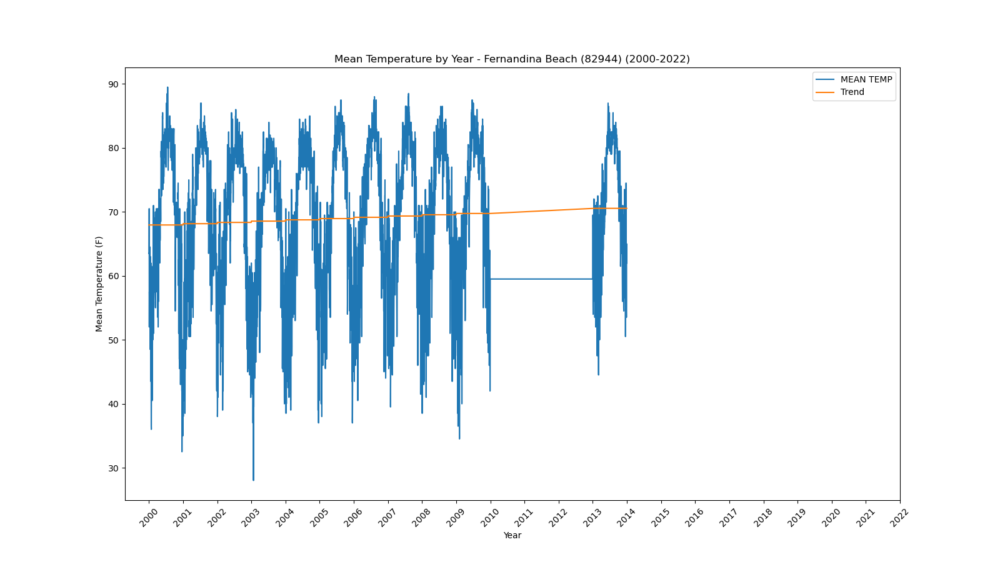</a></div>`)[0];
                popup_85121f7850346d2b9d7c847e04095d75.setContent(html_21f752f396a365f6548ddc1b105f74e6);
            
        

        marker_c0d7fe85f396f52f9e4fdc482b6ff991.bindPopup(popup_85121f7850346d2b9d7c847e04095d75)
        ;

        
    
    
            var marker_9bc20ebf02f05bb8efc35f62ea3fe4b2 = L.marker(
                [25.14, -80.93],
                {}
            ).addTo(map_f2e31951a28b9ed93b38d7cb64ef93d6);
        
    
            var icon_5bd158c60897f0bb6ae87fb351650f53 = L.AwesomeMarkers.icon(
                {"extraClasses": "fa-rotate-0", "icon": "info-sign", "iconColor": "white", "markerColor": "orange", "prefix": "glyphicon"}
            );
            marker_9bc20ebf02f05bb8efc35f62ea3fe4b2.setIcon(icon_5bd158c60897f0bb6ae87fb351650f53);
        
    
        var popup_81b08c0cdc1b076c401f4b3b87707e53 = L.popup({"maxWidth": 1000, "minWidth": 500});

        
            
                var html_c21f3f636daabbaace5805aa3b86826b = $(`<div id="html_c21f3f636daabbaace5805aa3b86826b" style="width: 100.0%; height: 100.0%;"><b>Flamingo Ranger Station (83020)</b><br>lat: 25.14, lon: -80.93<br><a href='../../static/img/plots/timeseries/meantemp_daily/83020_2000-2022.png' target='_BLANK'></a></div>`)[0];
                popup_81b08c0cdc1b076c401f4b3b87707e53.setContent(html_c21f3f636daabbaace5805aa3b86826b);
            
        

        marker_9bc20ebf02f05bb8efc35f62ea3fe4b2.bindPopup(popup_81b08c0cdc1b076c401f4b3b87707e53)
        ;

        
    
    
            var marker_acfec71422624702505080426979362e = L.marker(
                [27.53, -80.81],
                {}
            ).addTo(map_f2e31951a28b9ed93b38d7cb64ef93d6);
        
    
            var icon_c5b75149dc7713ea450f434601537d85 = L.AwesomeMarkers.icon(
                {"extraClasses": "fa-rotate-0", "icon": "info-sign", "iconColor": "white", "markerColor": "orange", "prefix": "glyphicon"}
            );
            marker_acfec71422624702505080426979362e.setIcon(icon_c5b75149dc7713ea450f434601537d85);
        
    
        var popup_062a26d66dd4cf969a8398c558d127ce = L.popup({"maxWidth": 1000, "minWidth": 500});

        
            
                var html_ec183493565858a4831b61ec6328b54a = $(`<div id="html_ec183493565858a4831b61ec6328b54a" style="width: 100.0%; height: 100.0%;"><b>Fort Drum (83137)</b><br>lat: 27.53, lon: -80.81<br><a href='../../static/img/plots/timeseries/meantemp_daily/83137_2000-2022.png' target='_BLANK'></a></div>`)[0];
                popup_062a26d66dd4cf969a8398c558d127ce.setContent(html_ec183493565858a4831b61ec6328b54a);
            
        

        marker_acfec71422624702505080426979362e.bindPopup(popup_062a26d66dd4cf969a8398c558d127ce)
        ;

        
    
    
            var marker_2b2b5ed251373299f72d0d239c2d791a = L.marker(
                [27.61, -81.94],
                {}
            ).addTo(map_f2e31951a28b9ed93b38d7cb64ef93d6);
        
    
            var icon_ea051266bbd6a4502f9988d3b8875e6c = L.AwesomeMarkers.icon(
                {"extraClasses": "fa-rotate-0", "icon": "info-sign", "iconColor": "white", "markerColor": "orange", "prefix": "glyphicon"}
            );
            marker_2b2b5ed251373299f72d0d239c2d791a.setIcon(icon_ea051266bbd6a4502f9988d3b8875e6c);
        
    
        var popup_094f2df80d474eee95ed1622c31d4ed3 = L.popup({"maxWidth": 1000, "minWidth": 500});

        
            
                var html_7a0809fdd7167aa1652708bf00a305c9 = $(`<div id="html_7a0809fdd7167aa1652708bf00a305c9" style="width: 100.0%; height: 100.0%;"><b>Fort Green 12 WSW (83153)</b><br>lat: 27.61, lon: -81.94<br><a href='../../static/img/plots/timeseries/meantemp_daily/83153_2000-2022.png' target='_BLANK'></a></div>`)[0];
                popup_094f2df80d474eee95ed1622c31d4ed3.setContent(html_7a0809fdd7167aa1652708bf00a305c9);
            
        

        marker_2b2b5ed251373299f72d0d239c2d791a.bindPopup(popup_094f2df80d474eee95ed1622c31d4ed3)
        ;

        
    
    
            var marker_28e07117999ea99d038ad9c37265c004 = L.marker(
                [26.07, -80.15],
                {}
            ).addTo(map_f2e31951a28b9ed93b38d7cb64ef93d6);
        
    
            var icon_c8c0f8e87502d692911613ee639c3b55 = L.AwesomeMarkers.icon(
                {"extraClasses": "fa-rotate-0", "icon": "info-sign", "iconColor": "white", "markerColor": "orange", "prefix": "glyphicon"}
            );
            marker_28e07117999ea99d038ad9c37265c004.setIcon(icon_c8c0f8e87502d692911613ee639c3b55);
        
    
        var popup_b838f1429d92e5e3d2aa81f0d81770cd = L.popup({"maxWidth": 1000, "minWidth": 500});

        
            
                var html_0bbb381f34469976d2908a8160cad709 = $(`<div id="html_0bbb381f34469976d2908a8160cad709" style="width: 100.0%; height: 100.0%;"><b>Ft Lauderdale (83163)</b><br>lat: 26.07, lon: -80.15<br><a href='../../static/img/plots/timeseries/meantemp_daily/83163_2000-2022.png' target='_BLANK'></a></div>`)[0];
                popup_b838f1429d92e5e3d2aa81f0d81770cd.setContent(html_0bbb381f34469976d2908a8160cad709);
            
        

        marker_28e07117999ea99d038ad9c37265c004.bindPopup(popup_b838f1429d92e5e3d2aa81f0d81770cd)
        ;

        
    
    
            var marker_ee4b89037550e6134a85842332c4fa13 = L.marker(
                [26.13, -80.11],
                {}
            ).addTo(map_f2e31951a28b9ed93b38d7cb64ef93d6);
        
    
            var icon_eaf5373b99238f3061350d9a64b6d567 = L.AwesomeMarkers.icon(
                {"extraClasses": "fa-rotate-0", "icon": "info-sign", "iconColor": "white", "markerColor": "orange", "prefix": "glyphicon"}
            );
            marker_ee4b89037550e6134a85842332c4fa13.setIcon(icon_eaf5373b99238f3061350d9a64b6d567);
        
    
        var popup_4792c1e499d4f42b1cc043c3e9ba22d6 = L.popup({"maxWidth": 1000, "minWidth": 500});

        
            
                var html_1be45d4c6d47d78c8a5e2d6374ba9bbf = $(`<div id="html_1be45d4c6d47d78c8a5e2d6374ba9bbf" style="width: 100.0%; height: 100.0%;"><b>Ft Lauderdale Beach (83168)</b><br>lat: 26.13, lon: -80.11<br><a href='../../static/img/plots/timeseries/meantemp_daily/83168_2000-2022.png' target='_BLANK'></a></div>`)[0];
                popup_4792c1e499d4f42b1cc043c3e9ba22d6.setContent(html_1be45d4c6d47d78c8a5e2d6374ba9bbf);
            
        

        marker_ee4b89037550e6134a85842332c4fa13.bindPopup(popup_4792c1e499d4f42b1cc043c3e9ba22d6)
        ;

        
    
    
            var marker_75e03905d6152c671236609e2279e5e3 = L.marker(
                [26.59, -81.87],
                {}
            ).addTo(map_f2e31951a28b9ed93b38d7cb64ef93d6);
        
    
            var icon_0b49f492ab07aa2f1a1e17247af5a0ba = L.AwesomeMarkers.icon(
                {"extraClasses": "fa-rotate-0", "icon": "info-sign", "iconColor": "white", "markerColor": "orange", "prefix": "glyphicon"}
            );
            marker_75e03905d6152c671236609e2279e5e3.setIcon(icon_0b49f492ab07aa2f1a1e17247af5a0ba);
        
    
        var popup_1533c230a1c2fde3962b58ba535bec53 = L.popup({"maxWidth": 1000, "minWidth": 500});

        
            
                var html_110fbbb454d2c8d2488adaf5c8740f18 = $(`<div id="html_110fbbb454d2c8d2488adaf5c8740f18" style="width: 100.0%; height: 100.0%;"><b>Fort Myers Page Field Airport (83186)</b><br>lat: 26.59, lon: -81.87<br><a href='../../static/img/plots/timeseries/meantemp_daily/83186_2000-2022.png' target='_BLANK'>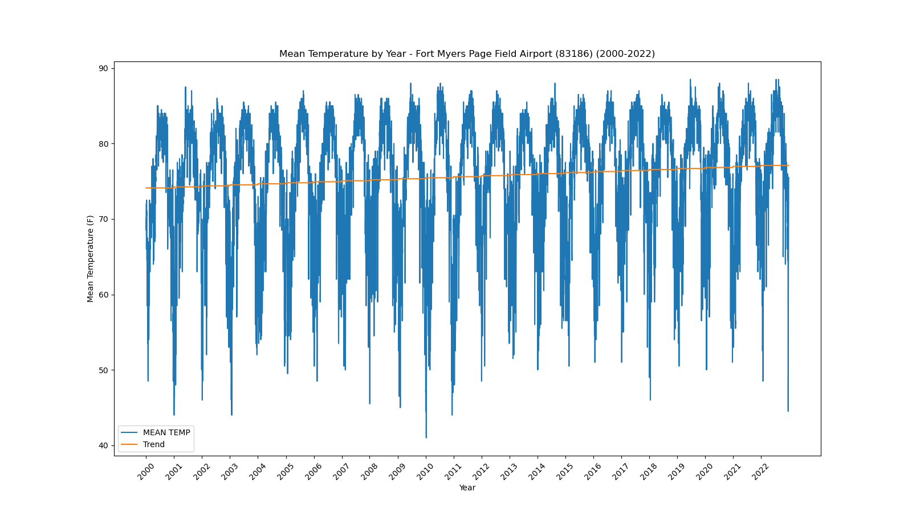</a></div>`)[0];
                popup_1533c230a1c2fde3962b58ba535bec53.setContent(html_110fbbb454d2c8d2488adaf5c8740f18);
            
        

        marker_75e03905d6152c671236609e2279e5e3.bindPopup(popup_1533c230a1c2fde3962b58ba535bec53)
        ;

        
    
    
            var marker_a97f8b73105eb4a95e8692b46141e3b5 = L.marker(
                [27.44, -80.34],
                {}
            ).addTo(map_f2e31951a28b9ed93b38d7cb64ef93d6);
        
    
            var icon_55ad383266deab7e6c96480b57c161ba = L.AwesomeMarkers.icon(
                {"extraClasses": "fa-rotate-0", "icon": "info-sign", "iconColor": "white", "markerColor": "orange", "prefix": "glyphicon"}
            );
            marker_a97f8b73105eb4a95e8692b46141e3b5.setIcon(icon_55ad383266deab7e6c96480b57c161ba);
        
    
        var popup_b05bf79b35e21448603c4bec502abedb = L.popup({"maxWidth": 1000, "minWidth": 500});

        
            
                var html_f956b8edc5f3b2dc4db6af1e8c9f1740 = $(`<div id="html_f956b8edc5f3b2dc4db6af1e8c9f1740" style="width: 100.0%; height: 100.0%;"><b>Fort Pierce (83207)</b><br>lat: 27.44, lon: -80.34<br><a href='../../static/img/plots/timeseries/meantemp_daily/83207_2000-2022.png' target='_BLANK'></a></div>`)[0];
                popup_b05bf79b35e21448603c4bec502abedb.setContent(html_f956b8edc5f3b2dc4db6af1e8c9f1740);
            
        

        marker_a97f8b73105eb4a95e8692b46141e3b5.bindPopup(popup_b05bf79b35e21448603c4bec502abedb)
        ;

        
    
    
            var marker_996935b39e98994da2b054a3932b2fe1 = L.marker(
                [29.69, -82.28],
                {}
            ).addTo(map_f2e31951a28b9ed93b38d7cb64ef93d6);
        
    
            var icon_dc5f3c8cd8a90bee3d6b0c858b05138f = L.AwesomeMarkers.icon(
                {"extraClasses": "fa-rotate-0", "icon": "info-sign", "iconColor": "white", "markerColor": "orange", "prefix": "glyphicon"}
            );
            marker_996935b39e98994da2b054a3932b2fe1.setIcon(icon_dc5f3c8cd8a90bee3d6b0c858b05138f);
        
    
        var popup_28c658fc36e5a18eb13687cea99f6f38 = L.popup({"maxWidth": 1000, "minWidth": 500});

        
            
                var html_c61160043d454a89937e58a67ab76205 = $(`<div id="html_c61160043d454a89937e58a67ab76205" style="width: 100.0%; height: 100.0%;"><b>Gainesville Regional Airport (83326)</b><br>lat: 29.69, lon: -82.28<br><a href='../../static/img/plots/timeseries/meantemp_daily/83326_2000-2022.png' target='_BLANK'></a></div>`)[0];
                popup_28c658fc36e5a18eb13687cea99f6f38.setContent(html_c61160043d454a89937e58a67ab76205);
            
        

        marker_996935b39e98994da2b054a3932b2fe1.bindPopup(popup_28c658fc36e5a18eb13687cea99f6f38)
        ;

        
    
    
            var marker_4197e7b4be02203c6a6b16da7d5dedac = L.marker(
                [30.28, -82.16],
                {}
            ).addTo(map_f2e31951a28b9ed93b38d7cb64ef93d6);
        
    
            var icon_ab0459240107f19c6d8b2f16d13150d0 = L.AwesomeMarkers.icon(
                {"extraClasses": "fa-rotate-0", "icon": "info-sign", "iconColor": "white", "markerColor": "orange", "prefix": "glyphicon"}
            );
            marker_4197e7b4be02203c6a6b16da7d5dedac.setIcon(icon_ab0459240107f19c6d8b2f16d13150d0);
        
    
        var popup_45ac31f7e160035e37c56eaeb4b0c9a2 = L.popup({"maxWidth": 1000, "minWidth": 500});

        
            
                var html_a826afaba70b7beb93855954bfa9a53d = $(`<div id="html_a826afaba70b7beb93855954bfa9a53d" style="width: 100.0%; height: 100.0%;"><b>Glen St Mary 1 W (83470)</b><br>lat: 30.28, lon: -82.16<br><a href='../../static/img/plots/timeseries/meantemp_daily/83470_2000-2022.png' target='_BLANK'>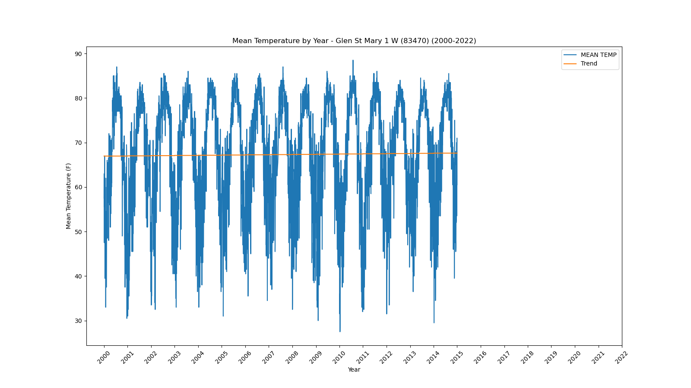</a></div>`)[0];
                popup_45ac31f7e160035e37c56eaeb4b0c9a2.setContent(html_a826afaba70b7beb93855954bfa9a53d);
            
        

        marker_4197e7b4be02203c6a6b16da7d5dedac.bindPopup(popup_45ac31f7e160035e37c56eaeb4b0c9a2)
        ;

        
    
    
            var marker_670ff8eb6da3dcdf46428ad5ca8b6ddb = L.marker(
                [29.72, -81.51],
                {}
            ).addTo(map_f2e31951a28b9ed93b38d7cb64ef93d6);
        
    
            var icon_90c7453100abdb22299e8654081654e0 = L.AwesomeMarkers.icon(
                {"extraClasses": "fa-rotate-0", "icon": "info-sign", "iconColor": "white", "markerColor": "orange", "prefix": "glyphicon"}
            );
            marker_670ff8eb6da3dcdf46428ad5ca8b6ddb.setIcon(icon_90c7453100abdb22299e8654081654e0);
        
    
        var popup_39e2b08c6bb0556acb62c41f8a6875ed = L.popup({"maxWidth": 1000, "minWidth": 500});

        
            
                var html_a7372dbcc9eca218f717f7f995787ee5 = $(`<div id="html_a7372dbcc9eca218f717f7f995787ee5" style="width: 100.0%; height: 100.0%;"><b>Hastings 4 NE (83874)</b><br>lat: 29.72, lon: -81.51<br><a href='../../static/img/plots/timeseries/meantemp_daily/83874_2000-2022.png' target='_BLANK'></a></div>`)[0];
                popup_39e2b08c6bb0556acb62c41f8a6875ed.setContent(html_a7372dbcc9eca218f717f7f995787ee5);
            
        

        marker_670ff8eb6da3dcdf46428ad5ca8b6ddb.bindPopup(popup_39e2b08c6bb0556acb62c41f8a6875ed)
        ;

        
    
    
            var marker_ddf971fd38495cb7a8b41afb5796164a = L.marker(
                [25.86, -80.28],
                {}
            ).addTo(map_f2e31951a28b9ed93b38d7cb64ef93d6);
        
    
            var icon_b7006266e855000ab0b5b9aa172f4bbc = L.AwesomeMarkers.icon(
                {"extraClasses": "fa-rotate-0", "icon": "info-sign", "iconColor": "white", "markerColor": "orange", "prefix": "glyphicon"}
            );
            marker_ddf971fd38495cb7a8b41afb5796164a.setIcon(icon_b7006266e855000ab0b5b9aa172f4bbc);
        
    
        var popup_8703dd41c4eb74f9e3f996f896ae76b0 = L.popup({"maxWidth": 1000, "minWidth": 500});

        
            
                var html_135c187dde7f410939a7a6026396dc83 = $(`<div id="html_135c187dde7f410939a7a6026396dc83" style="width: 100.0%; height: 100.0%;"><b>Hialeah (83909)</b><br>lat: 25.86, lon: -80.28<br><a href='../../static/img/plots/timeseries/meantemp_daily/83909_2000-2022.png' target='_BLANK'></a></div>`)[0];
                popup_8703dd41c4eb74f9e3f996f896ae76b0.setContent(html_135c187dde7f410939a7a6026396dc83);
            
        

        marker_ddf971fd38495cb7a8b41afb5796164a.bindPopup(popup_8703dd41c4eb74f9e3f996f896ae76b0)
        ;

        
    
    
            var marker_768882cd2e6bbce50164fc8f377fc671 = L.marker(
                [29.83, -82.6],
                {}
            ).addTo(map_f2e31951a28b9ed93b38d7cb64ef93d6);
        
    
            var icon_5da446cc3b5ce3bf6a0dfcef9ee35ff9 = L.AwesomeMarkers.icon(
                {"extraClasses": "fa-rotate-0", "icon": "info-sign", "iconColor": "white", "markerColor": "blue", "prefix": "glyphicon"}
            );
            marker_768882cd2e6bbce50164fc8f377fc671.setIcon(icon_5da446cc3b5ce3bf6a0dfcef9ee35ff9);
        
    
        var popup_c3d0b0c8734453dd3870ec21c17b5d35 = L.popup({"maxWidth": 1000, "minWidth": 500});

        
            
                var html_ded90634a915d17be85ac6d61cfa7319 = $(`<div id="html_ded90634a915d17be85ac6d61cfa7319" style="width: 100.0%; height: 100.0%;"><b>High Springs (83956)</b><br>lat: 29.83, lon: -82.6<br><a href='../../static/img/plots/timeseries/meantemp_daily/83956_2000-2022.png' target='_BLANK'></a></div>`)[0];
                popup_c3d0b0c8734453dd3870ec21c17b5d35.setContent(html_ded90634a915d17be85ac6d61cfa7319);
            
        

        marker_768882cd2e6bbce50164fc8f377fc671.bindPopup(popup_c3d0b0c8734453dd3870ec21c17b5d35)
        ;

        
    
    
            var marker_27a1cb14503274e566883b1a2a5edb6d = L.marker(
                [26.42, -81.42],
                {}
            ).addTo(map_f2e31951a28b9ed93b38d7cb64ef93d6);
        
    
            var icon_b32515a30f3ad7f57890ca7df9ba319d = L.AwesomeMarkers.icon(
                {"extraClasses": "fa-rotate-0", "icon": "info-sign", "iconColor": "white", "markerColor": "orange", "prefix": "glyphicon"}
            );
            marker_27a1cb14503274e566883b1a2a5edb6d.setIcon(icon_b32515a30f3ad7f57890ca7df9ba319d);
        
    
        var popup_d7a8a2945d490eba9157e1717966147b = L.popup({"maxWidth": 1000, "minWidth": 500});

        
            
                var html_12aa65f62fb531d0c69bed927ff3f32c = $(`<div id="html_12aa65f62fb531d0c69bed927ff3f32c" style="width: 100.0%; height: 100.0%;"><b>Immokalee (84210)</b><br>lat: 26.42, lon: -81.42<br><a href='../../static/img/plots/timeseries/meantemp_daily/84210_2000-2022.png' target='_BLANK'>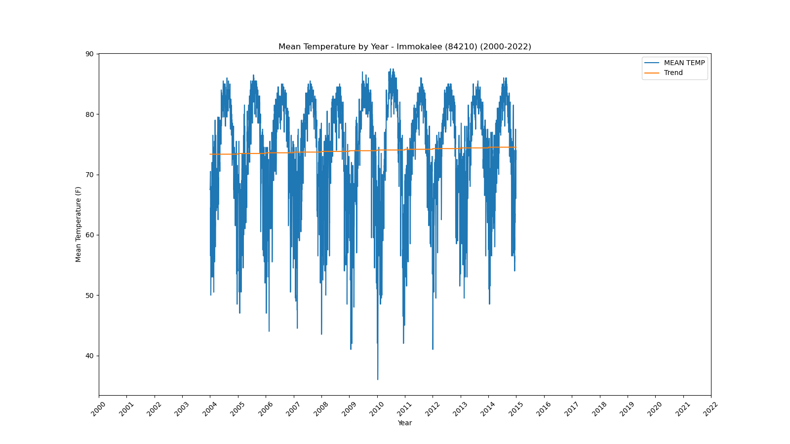</a></div>`)[0];
                popup_d7a8a2945d490eba9157e1717966147b.setContent(html_12aa65f62fb531d0c69bed927ff3f32c);
            
        

        marker_27a1cb14503274e566883b1a2a5edb6d.bindPopup(popup_d7a8a2945d490eba9157e1717966147b)
        ;

        
    
    
            var marker_86f0bf94a09d63916cec0f3cc4bc80a2 = L.marker(
                [28.84, -82.34],
                {}
            ).addTo(map_f2e31951a28b9ed93b38d7cb64ef93d6);
        
    
            var icon_579bc819e160b1e8989aa5dbbf1c695e = L.AwesomeMarkers.icon(
                {"extraClasses": "fa-rotate-0", "icon": "info-sign", "iconColor": "white", "markerColor": "orange", "prefix": "glyphicon"}
            );
            marker_86f0bf94a09d63916cec0f3cc4bc80a2.setIcon(icon_579bc819e160b1e8989aa5dbbf1c695e);
        
    
        var popup_ef8701e1766be7421066a7fe31f0d4db = L.popup({"maxWidth": 1000, "minWidth": 500});

        
            
                var html_5b20da69d20a3de29a020e53da201463 = $(`<div id="html_5b20da69d20a3de29a020e53da201463" style="width: 100.0%; height: 100.0%;"><b>Iverness 3 SE (84289)</b><br>lat: 28.84, lon: -82.34<br><a href='../../static/img/plots/timeseries/meantemp_daily/84289_2000-2022.png' target='_BLANK'></a></div>`)[0];
                popup_ef8701e1766be7421066a7fe31f0d4db.setContent(html_5b20da69d20a3de29a020e53da201463);
            
        

        marker_86f0bf94a09d63916cec0f3cc4bc80a2.bindPopup(popup_ef8701e1766be7421066a7fe31f0d4db)
        ;

        
    
    
            var marker_78dfb08fdc3d60374fbe4ded1da567cc = L.marker(
                [30.49, -81.68],
                {}
            ).addTo(map_f2e31951a28b9ed93b38d7cb64ef93d6);
        
    
            var icon_2b9781d61c443c0e97bbd271261ec380 = L.AwesomeMarkers.icon(
                {"extraClasses": "fa-rotate-0", "icon": "info-sign", "iconColor": "white", "markerColor": "orange", "prefix": "glyphicon"}
            );
            marker_78dfb08fdc3d60374fbe4ded1da567cc.setIcon(icon_2b9781d61c443c0e97bbd271261ec380);
        
    
        var popup_a8c0335a1fdf90fa1012c052c427275e = L.popup({"maxWidth": 1000, "minWidth": 500});

        
            
                var html_1eb20ccf78c2633c830caf3362f18cd1 = $(`<div id="html_1eb20ccf78c2633c830caf3362f18cd1" style="width: 100.0%; height: 100.0%;"><b>Jacksonville Intl Airport (84358)</b><br>lat: 30.49, lon: -81.68<br><a href='../../static/img/plots/timeseries/meantemp_daily/84358_2000-2022.png' target='_BLANK'></a></div>`)[0];
                popup_a8c0335a1fdf90fa1012c052c427275e.setContent(html_1eb20ccf78c2633c830caf3362f18cd1);
            
        

        marker_78dfb08fdc3d60374fbe4ded1da567cc.bindPopup(popup_a8c0335a1fdf90fa1012c052c427275e)
        ;

        
    
    
            var marker_3d698abb6706868006a722da21099e9a = L.marker(
                [30.28, -81.39],
                {}
            ).addTo(map_f2e31951a28b9ed93b38d7cb64ef93d6);
        
    
            var icon_320bf57bdbd71d18ad53feca4edfdccf = L.AwesomeMarkers.icon(
                {"extraClasses": "fa-rotate-0", "icon": "info-sign", "iconColor": "white", "markerColor": "orange", "prefix": "glyphicon"}
            );
            marker_3d698abb6706868006a722da21099e9a.setIcon(icon_320bf57bdbd71d18ad53feca4edfdccf);
        
    
        var popup_5688441e404db823acf65df95f5c083a = L.popup({"maxWidth": 1000, "minWidth": 500});

        
            
                var html_d54e58ae35a00ef49757bbc413ed5f53 = $(`<div id="html_d54e58ae35a00ef49757bbc413ed5f53" style="width: 100.0%; height: 100.0%;"><b>Jacksonville Beach (84366)</b><br>lat: 30.28, lon: -81.39<br><a href='../../static/img/plots/timeseries/meantemp_daily/84366_2000-2022.png' target='_BLANK'></a></div>`)[0];
                popup_5688441e404db823acf65df95f5c083a.setContent(html_d54e58ae35a00ef49757bbc413ed5f53);
            
        

        marker_3d698abb6706868006a722da21099e9a.bindPopup(popup_5688441e404db823acf65df95f5c083a)
        ;

        
    
    
            var marker_f2412c79ec6a65b2a565ba38677e2101 = L.marker(
                [30.52, -82.94],
                {}
            ).addTo(map_f2e31951a28b9ed93b38d7cb64ef93d6);
        
    
            var icon_8f11affa4f4e01923e04be4a39887e35 = L.AwesomeMarkers.icon(
                {"extraClasses": "fa-rotate-0", "icon": "info-sign", "iconColor": "white", "markerColor": "orange", "prefix": "glyphicon"}
            );
            marker_f2412c79ec6a65b2a565ba38677e2101.setIcon(icon_8f11affa4f4e01923e04be4a39887e35);
        
    
        var popup_fc9a79d9385736328a3d78a400c47d6f = L.popup({"maxWidth": 1000, "minWidth": 500});

        
            
                var html_cfabfc1ccbdbf18eddf8b3f7de6bc34a = $(`<div id="html_cfabfc1ccbdbf18eddf8b3f7de6bc34a" style="width: 100.0%; height: 100.0%;"><b>Jasper (84394)</b><br>lat: 30.52, lon: -82.94<br><a href='../../static/img/plots/timeseries/meantemp_daily/84394_2000-2022.png' target='_BLANK'></a></div>`)[0];
                popup_fc9a79d9385736328a3d78a400c47d6f.setContent(html_cfabfc1ccbdbf18eddf8b3f7de6bc34a);
            
        

        marker_f2412c79ec6a65b2a565ba38677e2101.bindPopup(popup_fc9a79d9385736328a3d78a400c47d6f)
        ;

        
    
    
            var marker_e5230d690ab57bc1e852e883ad84404c = L.marker(
                [24.55, -81.76],
                {}
            ).addTo(map_f2e31951a28b9ed93b38d7cb64ef93d6);
        
    
            var icon_c349c30e7de57621c86b0e8ec83ea6e1 = L.AwesomeMarkers.icon(
                {"extraClasses": "fa-rotate-0", "icon": "info-sign", "iconColor": "white", "markerColor": "orange", "prefix": "glyphicon"}
            );
            marker_e5230d690ab57bc1e852e883ad84404c.setIcon(icon_c349c30e7de57621c86b0e8ec83ea6e1);
        
    
        var popup_e6fe472fe5ba467f5cbb1017578c6f78 = L.popup({"maxWidth": 1000, "minWidth": 500});

        
            
                var html_4596dfdf58fce0ec253b9d7850e09b00 = $(`<div id="html_4596dfdf58fce0ec253b9d7850e09b00" style="width: 100.0%; height: 100.0%;"><b>Key West Intl Airport (84570)</b><br>lat: 24.55, lon: -81.76<br><a href='../../static/img/plots/timeseries/meantemp_daily/84570_2000-2022.png' target='_BLANK'>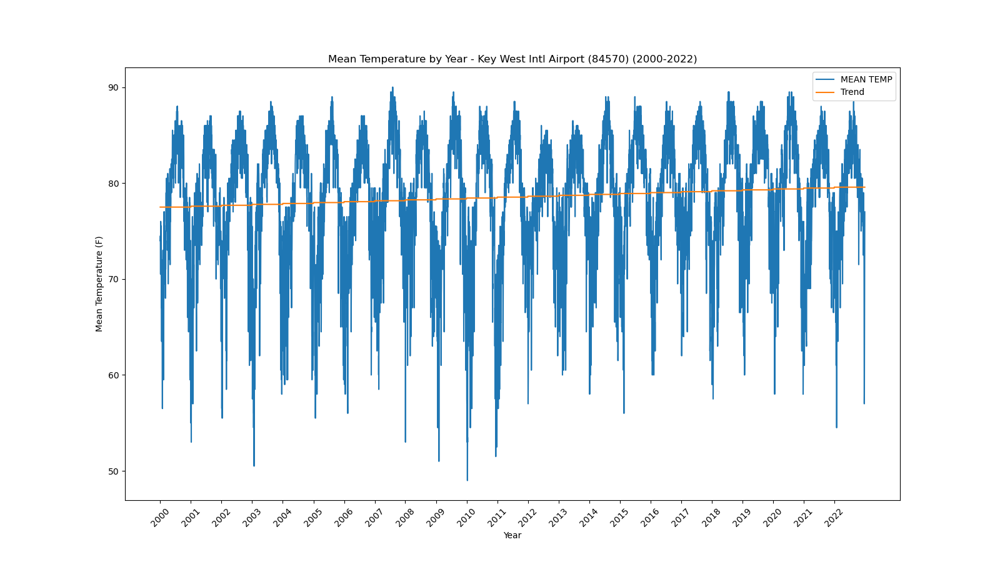</a></div>`)[0];
                popup_e6fe472fe5ba467f5cbb1017578c6f78.setContent(html_4596dfdf58fce0ec253b9d7850e09b00);
            
        

        marker_e5230d690ab57bc1e852e883ad84404c.bindPopup(popup_e6fe472fe5ba467f5cbb1017578c6f78)
        ;

        
    
    
            var marker_80526099188e3295442698b781ae9be8 = L.marker(
                [28.29, -81.41],
                {}
            ).addTo(map_f2e31951a28b9ed93b38d7cb64ef93d6);
        
    
            var icon_88d5ecf8d9b72c92be35fbf71a0f72c4 = L.AwesomeMarkers.icon(
                {"extraClasses": "fa-rotate-0", "icon": "info-sign", "iconColor": "white", "markerColor": "orange", "prefix": "glyphicon"}
            );
            marker_80526099188e3295442698b781ae9be8.setIcon(icon_88d5ecf8d9b72c92be35fbf71a0f72c4);
        
    
        var popup_1c357f9fc4a312e281da767691070c20 = L.popup({"maxWidth": 1000, "minWidth": 500});

        
            
                var html_ccf10fa4c48a76bcfc18de24314d3e50 = $(`<div id="html_ccf10fa4c48a76bcfc18de24314d3e50" style="width: 100.0%; height: 100.0%;"><b>Kissimmee (84625)</b><br>lat: 28.29, lon: -81.41<br><a href='../../static/img/plots/timeseries/meantemp_daily/84625_2000-2022.png' target='_BLANK'></a></div>`)[0];
                popup_1c357f9fc4a312e281da767691070c20.setContent(html_ccf10fa4c48a76bcfc18de24314d3e50);
            
        

        marker_80526099188e3295442698b781ae9be8.bindPopup(popup_1c357f9fc4a312e281da767691070c20)
        ;

        
    
    
            var marker_b8b18728cf46e2ef86c9015fb421408c = L.marker(
                [26.71, -81.46],
                {}
            ).addTo(map_f2e31951a28b9ed93b38d7cb64ef93d6);
        
    
            var icon_8fcf9d0c7bbba96802beb7fa0aa43392 = L.AwesomeMarkers.icon(
                {"extraClasses": "fa-rotate-0", "icon": "info-sign", "iconColor": "white", "markerColor": "blue", "prefix": "glyphicon"}
            );
            marker_b8b18728cf46e2ef86c9015fb421408c.setIcon(icon_8fcf9d0c7bbba96802beb7fa0aa43392);
        
    
        var popup_d99f65baee76c03c70894cf676be6c55 = L.popup({"maxWidth": 1000, "minWidth": 500});

        
            
                var html_28855527c93039853b227270f8df3275 = $(`<div id="html_28855527c93039853b227270f8df3275" style="width: 100.0%; height: 100.0%;"><b>La Belle (84662)</b><br>lat: 26.71, lon: -81.46<br><a href='../../static/img/plots/timeseries/meantemp_daily/84662_2000-2022.png' target='_BLANK'></a></div>`)[0];
                popup_d99f65baee76c03c70894cf676be6c55.setContent(html_28855527c93039853b227270f8df3275);
            
        

        marker_b8b18728cf46e2ef86c9015fb421408c.bindPopup(popup_d99f65baee76c03c70894cf676be6c55)
        ;

        
    
    
            var marker_ade91a342da705fd593219ee6eef835d = L.marker(
                [30.12, -82.64],
                {}
            ).addTo(map_f2e31951a28b9ed93b38d7cb64ef93d6);
        
    
            var icon_66201d58151ac97ea0e72e5845209e43 = L.AwesomeMarkers.icon(
                {"extraClasses": "fa-rotate-0", "icon": "info-sign", "iconColor": "white", "markerColor": "orange", "prefix": "glyphicon"}
            );
            marker_ade91a342da705fd593219ee6eef835d.setIcon(icon_66201d58151ac97ea0e72e5845209e43);
        
    
        var popup_fe00f07595064cec1246461309e49bac = L.popup({"maxWidth": 1000, "minWidth": 500});

        
            
                var html_551e85f0ae5c1859d40159505dff4bb3 = $(`<div id="html_551e85f0ae5c1859d40159505dff4bb3" style="width: 100.0%; height: 100.0%;"><b>Lake City 2 E (84731)</b><br>lat: 30.12, lon: -82.64<br><a href='../../static/img/plots/timeseries/meantemp_daily/84731_2000-2022.png' target='_BLANK'></a></div>`)[0];
                popup_fe00f07595064cec1246461309e49bac.setContent(html_551e85f0ae5c1859d40159505dff4bb3);
            
        

        marker_ade91a342da705fd593219ee6eef835d.bindPopup(popup_fe00f07595064cec1246461309e49bac)
        ;

        
    
    
            var marker_f66064946567cea3f6e2e4db3219c64a = L.marker(
                [26.88, -81.78],
                {}
            ).addTo(map_f2e31951a28b9ed93b38d7cb64ef93d6);
        
    
            var icon_8dfa2960e1ccbfa7b002c01e67eb3bbf = L.AwesomeMarkers.icon(
                {"extraClasses": "fa-rotate-0", "icon": "info-sign", "iconColor": "white", "markerColor": "orange", "prefix": "glyphicon"}
            );
            marker_f66064946567cea3f6e2e4db3219c64a.setIcon(icon_8dfa2960e1ccbfa7b002c01e67eb3bbf);
        
    
        var popup_71e857c169bb5d2fb604bd5e391be525 = L.popup({"maxWidth": 1000, "minWidth": 500});

        
            
                var html_9fa7df577900b243588ecc7dd37ff9ae = $(`<div id="html_9fa7df577900b243588ecc7dd37ff9ae" style="width: 100.0%; height: 100.0%;"><b>Lisbon (85076)</b><br>lat: 26.88, lon: -81.78<br><a href='../../static/img/plots/timeseries/meantemp_daily/85076_2000-2022.png' target='_BLANK'></a></div>`)[0];
                popup_71e857c169bb5d2fb604bd5e391be525.setContent(html_9fa7df577900b243588ecc7dd37ff9ae);
            
        

        marker_f66064946567cea3f6e2e4db3219c64a.bindPopup(popup_71e857c169bb5d2fb604bd5e391be525)
        ;

        
    
    
            var marker_509a31a0e38d56b8a10e29b11f8bad55 = L.marker(
                [30.29, -82.99],
                {}
            ).addTo(map_f2e31951a28b9ed93b38d7cb64ef93d6);
        
    
            var icon_1eba2eb736b1f9d7fd07c0993eeb6214 = L.AwesomeMarkers.icon(
                {"extraClasses": "fa-rotate-0", "icon": "info-sign", "iconColor": "white", "markerColor": "orange", "prefix": "glyphicon"}
            );
            marker_509a31a0e38d56b8a10e29b11f8bad55.setIcon(icon_1eba2eb736b1f9d7fd07c0993eeb6214);
        
    
        var popup_ff9982e3334ec88ea6dad00194316940 = L.popup({"maxWidth": 1000, "minWidth": 500});

        
            
                var html_8a79cfdd3b23d888a662f65fd7ce3015 = $(`<div id="html_8a79cfdd3b23d888a662f65fd7ce3015" style="width: 100.0%; height: 100.0%;"><b>Live Oak (85099)</b><br>lat: 30.29, lon: -82.99<br><a href='../../static/img/plots/timeseries/meantemp_daily/85099_2000-2022.png' target='_BLANK'></a></div>`)[0];
                popup_ff9982e3334ec88ea6dad00194316940.setContent(html_8a79cfdd3b23d888a662f65fd7ce3015);
            
        

        marker_509a31a0e38d56b8a10e29b11f8bad55.bindPopup(popup_ff9982e3334ec88ea6dad00194316940)
        ;

        
    
    
            var marker_914d2febcce61d1ec83a068b458c24ff = L.marker(
                [30.48, -83.24],
                {}
            ).addTo(map_f2e31951a28b9ed93b38d7cb64ef93d6);
        
    
            var icon_a61af84017509ac374eed452b035019f = L.AwesomeMarkers.icon(
                {"extraClasses": "fa-rotate-0", "icon": "info-sign", "iconColor": "white", "markerColor": "orange", "prefix": "glyphicon"}
            );
            marker_914d2febcce61d1ec83a068b458c24ff.setIcon(icon_a61af84017509ac374eed452b035019f);
        
    
        var popup_6fd1d405048b569cc104e9656292f663 = L.popup({"maxWidth": 1000, "minWidth": 500});

        
            
                var html_c4a922d4846fadbb51d174a6d88d7a56 = $(`<div id="html_c4a922d4846fadbb51d174a6d88d7a56" style="width: 100.0%; height: 100.0%;"><b>Madison (85275)</b><br>lat: 30.48, lon: -83.24<br><a href='../../static/img/plots/timeseries/meantemp_daily/85275_2000-2022.png' target='_BLANK'></a></div>`)[0];
                popup_6fd1d405048b569cc104e9656292f663.setContent(html_c4a922d4846fadbb51d174a6d88d7a56);
            
        

        marker_914d2febcce61d1ec83a068b458c24ff.bindPopup(popup_6fd1d405048b569cc104e9656292f663)
        ;

        
    
    
            var marker_f5d73dc24786545d0e44e611a2c66ae1 = L.marker(
                [30.05, -83.18],
                {}
            ).addTo(map_f2e31951a28b9ed93b38d7cb64ef93d6);
        
    
            var icon_7b1c9c182e39b762eeef2665ba29c747 = L.AwesomeMarkers.icon(
                {"extraClasses": "fa-rotate-0", "icon": "info-sign", "iconColor": "white", "markerColor": "orange", "prefix": "glyphicon"}
            );
            marker_f5d73dc24786545d0e44e611a2c66ae1.setIcon(icon_7b1c9c182e39b762eeef2665ba29c747);
        
    
        var popup_9e50ee122f7e9f1dd41a859f560cdfb0 = L.popup({"maxWidth": 1000, "minWidth": 500});

        
            
                var html_36252341b233ab5d2ffb5e02e67490ff = $(`<div id="html_36252341b233ab5d2ffb5e02e67490ff" style="width: 100.0%; height: 100.0%;"><b>Mayo (85539)</b><br>lat: 30.05, lon: -83.18<br><a href='../../static/img/plots/timeseries/meantemp_daily/85539_2000-2022.png' target='_BLANK'></a></div>`)[0];
                popup_9e50ee122f7e9f1dd41a859f560cdfb0.setContent(html_36252341b233ab5d2ffb5e02e67490ff);
            
        

        marker_f5d73dc24786545d0e44e611a2c66ae1.bindPopup(popup_9e50ee122f7e9f1dd41a859f560cdfb0)
        ;

        
    
    
            var marker_199514db4712f66b489fdadc12be498c = L.marker(
                [28.11, -80.66],
                {}
            ).addTo(map_f2e31951a28b9ed93b38d7cb64ef93d6);
        
    
            var icon_09cfe2933cc831043632cdc45f3d062b = L.AwesomeMarkers.icon(
                {"extraClasses": "fa-rotate-0", "icon": "info-sign", "iconColor": "white", "markerColor": "orange", "prefix": "glyphicon"}
            );
            marker_199514db4712f66b489fdadc12be498c.setIcon(icon_09cfe2933cc831043632cdc45f3d062b);
        
    
        var popup_e9171bf713ade4047e8ef457439d86d4 = L.popup({"maxWidth": 1000, "minWidth": 500});

        
            
                var html_b10652e2b228bc7e6740c70ffcf1355b = $(`<div id="html_b10652e2b228bc7e6740c70ffcf1355b" style="width: 100.0%; height: 100.0%;"><b>Melbourne WFO (85612)</b><br>lat: 28.11, lon: -80.66<br><a href='../../static/img/plots/timeseries/meantemp_daily/85612_2000-2022.png' target='_BLANK'></a></div>`)[0];
                popup_e9171bf713ade4047e8ef457439d86d4.setContent(html_b10652e2b228bc7e6740c70ffcf1355b);
            
        

        marker_199514db4712f66b489fdadc12be498c.bindPopup(popup_e9171bf713ade4047e8ef457439d86d4)
        ;

        
    
    
            var marker_1d08cccd56cac0e6210d738d1ca3beff = L.marker(
                [25.79, -80.14],
                {}
            ).addTo(map_f2e31951a28b9ed93b38d7cb64ef93d6);
        
    
            var icon_a1824fafe0462c4a34f4659cf940ed98 = L.AwesomeMarkers.icon(
                {"extraClasses": "fa-rotate-0", "icon": "info-sign", "iconColor": "white", "markerColor": "orange", "prefix": "glyphicon"}
            );
            marker_1d08cccd56cac0e6210d738d1ca3beff.setIcon(icon_a1824fafe0462c4a34f4659cf940ed98);
        
    
        var popup_9cd5c740059329e65c75bea18d1147bc = L.popup({"maxWidth": 1000, "minWidth": 500});

        
            
                var html_cc8c09cf2d08c5c34b50c07685ac8de0 = $(`<div id="html_cc8c09cf2d08c5c34b50c07685ac8de0" style="width: 100.0%; height: 100.0%;"><b>Miami Beach (85658)</b><br>lat: 25.79, lon: -80.14<br><a href='../../static/img/plots/timeseries/meantemp_daily/85658_2000-2022.png' target='_BLANK'>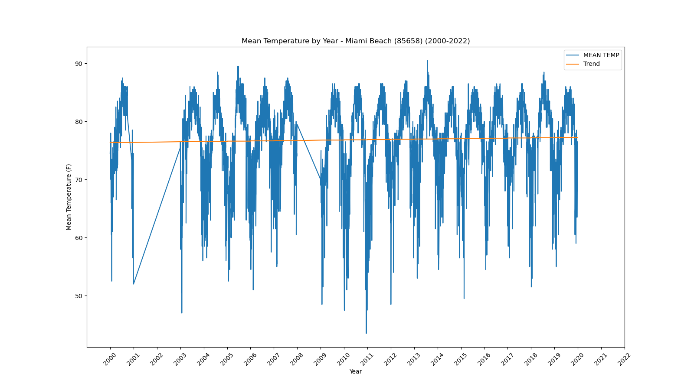</a></div>`)[0];
                popup_9cd5c740059329e65c75bea18d1147bc.setContent(html_cc8c09cf2d08c5c34b50c07685ac8de0);
            
        

        marker_1d08cccd56cac0e6210d738d1ca3beff.bindPopup(popup_9cd5c740059329e65c75bea18d1147bc)
        ;

        
    
    
            var marker_95bc1308564ccb129ec83f9fe92b6473 = L.marker(
                [25.79, -80.28],
                {}
            ).addTo(map_f2e31951a28b9ed93b38d7cb64ef93d6);
        
    
            var icon_267610abef7bb2cf054e29f99e8cdef9 = L.AwesomeMarkers.icon(
                {"extraClasses": "fa-rotate-0", "icon": "info-sign", "iconColor": "white", "markerColor": "orange", "prefix": "glyphicon"}
            );
            marker_95bc1308564ccb129ec83f9fe92b6473.setIcon(icon_267610abef7bb2cf054e29f99e8cdef9);
        
    
        var popup_e2753f42b1a63d35150fa6eacff34655 = L.popup({"maxWidth": 1000, "minWidth": 500});

        
            
                var html_4ba284ec18487e44ec976c7ea071e257 = $(`<div id="html_4ba284ec18487e44ec976c7ea071e257" style="width: 100.0%; height: 100.0%;"><b>Miami Intl Airport (85663)</b><br>lat: 25.79, lon: -80.28<br><a href='../../static/img/plots/timeseries/meantemp_daily/85663_2000-2022.png' target='_BLANK'></a></div>`)[0];
                popup_e2753f42b1a63d35150fa6eacff34655.setContent(html_4ba284ec18487e44ec976c7ea071e257);
            
        

        marker_95bc1308564ccb129ec83f9fe92b6473.bindPopup(popup_e2753f42b1a63d35150fa6eacff34655)
        ;

        
    
    
            var marker_5539b96236b04060ffbf592da9b0fb24 = L.marker(
                [30.29, -83.46],
                {}
            ).addTo(map_f2e31951a28b9ed93b38d7cb64ef93d6);
        
    
            var icon_3fc48c65cb18025b93209089f0c0ac14 = L.AwesomeMarkers.icon(
                {"extraClasses": "fa-rotate-0", "icon": "info-sign", "iconColor": "white", "markerColor": "orange", "prefix": "glyphicon"}
            );
            marker_5539b96236b04060ffbf592da9b0fb24.setIcon(icon_3fc48c65cb18025b93209089f0c0ac14);
        
    
        var popup_e11cf37e5082096edc1e854406c99655 = L.popup({"maxWidth": 1000, "minWidth": 500});

        
            
                var html_4aea8f9552a6865b695317e7fbdf4d2a = $(`<div id="html_4aea8f9552a6865b695317e7fbdf4d2a" style="width: 100.0%; height: 100.0%;"><b>Monticello 5 SE (85879)</b><br>lat: 30.29, lon: -83.46<br><a href='../../static/img/plots/timeseries/meantemp_daily/85879_2000-2022.png' target='_BLANK'></a></div>`)[0];
                popup_e11cf37e5082096edc1e854406c99655.setContent(html_4aea8f9552a6865b695317e7fbdf4d2a);
            
        

        marker_5539b96236b04060ffbf592da9b0fb24.bindPopup(popup_e11cf37e5082096edc1e854406c99655)
        ;

        
    
    
            var marker_13f4e9651705b853b550077c6188ac83 = L.marker(
                [30.55, -83.87],
                {}
            ).addTo(map_f2e31951a28b9ed93b38d7cb64ef93d6);
        
    
            var icon_9f74346fff8bd1b052bfb932b3ce389c = L.AwesomeMarkers.icon(
                {"extraClasses": "fa-rotate-0", "icon": "info-sign", "iconColor": "white", "markerColor": "orange", "prefix": "glyphicon"}
            );
            marker_13f4e9651705b853b550077c6188ac83.setIcon(icon_9f74346fff8bd1b052bfb932b3ce389c);
        
    
        var popup_2749c70c17534bb669ce0354880e81ce = L.popup({"maxWidth": 1000, "minWidth": 500});

        
            
                var html_080df761b72ef2c4b935b22117ab9dd4 = $(`<div id="html_080df761b72ef2c4b935b22117ab9dd4" style="width: 100.0%; height: 100.0%;"><b>Monticello 10 SW (85880)</b><br>lat: 30.55, lon: -83.87<br><a href='../../static/img/plots/timeseries/meantemp_daily/85880_2000-2022.png' target='_BLANK'></a></div>`)[0];
                popup_2749c70c17534bb669ce0354880e81ce.setContent(html_080df761b72ef2c4b935b22117ab9dd4);
            
        

        marker_13f4e9651705b853b550077c6188ac83.bindPopup(popup_2749c70c17534bb669ce0354880e81ce)
        ;

        
    
    
            var marker_519610ae4c66eb07424b95e47f2ea725 = L.marker(
                [26.84, -81.09],
                {}
            ).addTo(map_f2e31951a28b9ed93b38d7cb64ef93d6);
        
    
            var icon_c56cab6fb13e22ff661ea60288dce61b = L.AwesomeMarkers.icon(
                {"extraClasses": "fa-rotate-0", "icon": "info-sign", "iconColor": "white", "markerColor": "orange", "prefix": "glyphicon"}
            );
            marker_519610ae4c66eb07424b95e47f2ea725.setIcon(icon_c56cab6fb13e22ff661ea60288dce61b);
        
    
        var popup_fb40629dce1775e4e66c8836ed9c6c97 = L.popup({"maxWidth": 1000, "minWidth": 500});

        
            
                var html_55291c1cb3173e2641ca1d177bd634fd = $(`<div id="html_55291c1cb3173e2641ca1d177bd634fd" style="width: 100.0%; height: 100.0%;"><b>Moore Haven Lock 1 (85895)</b><br>lat: 26.84, lon: -81.09<br><a href='../../static/img/plots/timeseries/meantemp_daily/85895_2000-2022.png' target='_BLANK'></a></div>`)[0];
                popup_fb40629dce1775e4e66c8836ed9c6c97.setContent(html_55291c1cb3173e2641ca1d177bd634fd);
            
        

        marker_519610ae4c66eb07424b95e47f2ea725.bindPopup(popup_fb40629dce1775e4e66c8836ed9c6c97)
        ;

        
    
    
            var marker_068a8d7637f58052aafb323471d2daf8 = L.marker(
                [27.93, -81.59],
                {}
            ).addTo(map_f2e31951a28b9ed93b38d7cb64ef93d6);
        
    
            var icon_2c23d10398fd2c055b6f895e7ea71e98 = L.AwesomeMarkers.icon(
                {"extraClasses": "fa-rotate-0", "icon": "info-sign", "iconColor": "white", "markerColor": "orange", "prefix": "glyphicon"}
            );
            marker_068a8d7637f58052aafb323471d2daf8.setIcon(icon_2c23d10398fd2c055b6f895e7ea71e98);
        
    
        var popup_ed0f891cd65fd866c615ec6ac270bbf0 = L.popup({"maxWidth": 1000, "minWidth": 500});

        
            
                var html_be5193b247056c3ff63025d4b1fd327a = $(`<div id="html_be5193b247056c3ff63025d4b1fd327a" style="width: 100.0%; height: 100.0%;"><b>Mountain Lake (85973)</b><br>lat: 27.93, lon: -81.59<br><a href='../../static/img/plots/timeseries/meantemp_daily/85973_2000-2022.png' target='_BLANK'></a></div>`)[0];
                popup_ed0f891cd65fd866c615ec6ac270bbf0.setContent(html_be5193b247056c3ff63025d4b1fd327a);
            
        

        marker_068a8d7637f58052aafb323471d2daf8.bindPopup(popup_ed0f891cd65fd866c615ec6ac270bbf0)
        ;

        
    
    
            var marker_2e927ab9eb505dc13d1b480ce4a88db6 = L.marker(
                [27.2, -82.25],
                {}
            ).addTo(map_f2e31951a28b9ed93b38d7cb64ef93d6);
        
    
            var icon_63a7c06bf78b7cf710a3567436f3130e = L.AwesomeMarkers.icon(
                {"extraClasses": "fa-rotate-0", "icon": "info-sign", "iconColor": "white", "markerColor": "orange", "prefix": "glyphicon"}
            );
            marker_2e927ab9eb505dc13d1b480ce4a88db6.setIcon(icon_63a7c06bf78b7cf710a3567436f3130e);
        
    
        var popup_cc711cde1b134bb310e1e9723b24afab = L.popup({"maxWidth": 1000, "minWidth": 500});

        
            
                var html_dbc6f421b2d462865952e8848141db1a = $(`<div id="html_dbc6f421b2d462865952e8848141db1a" style="width: 100.0%; height: 100.0%;"><b>Myakka River State Park (86065)</b><br>lat: 27.2, lon: -82.25<br><a href='../../static/img/plots/timeseries/meantemp_daily/86065_2000-2022.png' target='_BLANK'>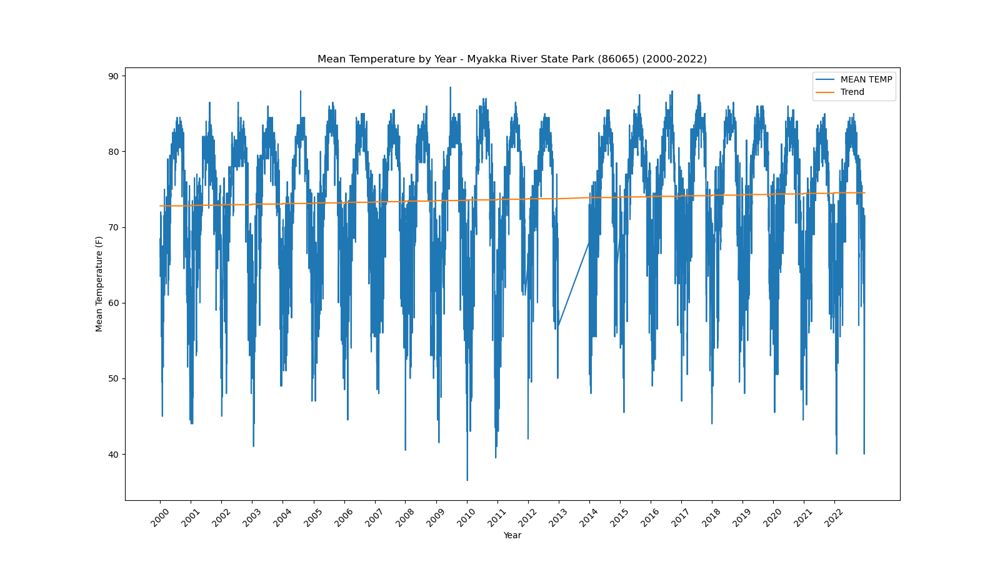</a></div>`)[0];
                popup_cc711cde1b134bb310e1e9723b24afab.setContent(html_dbc6f421b2d462865952e8848141db1a);
            
        

        marker_2e927ab9eb505dc13d1b480ce4a88db6.bindPopup(popup_cc711cde1b134bb310e1e9723b24afab)
        ;

        
    
    
            var marker_e85bbe52ea1b60f224ed26a7ebc96a29 = L.marker(
                [26.15, -81.77],
                {}
            ).addTo(map_f2e31951a28b9ed93b38d7cb64ef93d6);
        
    
            var icon_c8a4030174b024bf52d498840fc50640 = L.AwesomeMarkers.icon(
                {"extraClasses": "fa-rotate-0", "icon": "info-sign", "iconColor": "white", "markerColor": "blue", "prefix": "glyphicon"}
            );
            marker_e85bbe52ea1b60f224ed26a7ebc96a29.setIcon(icon_c8a4030174b024bf52d498840fc50640);
        
    
        var popup_521b10367bbf44fe222edd19a5f44cf8 = L.popup({"maxWidth": 1000, "minWidth": 500});

        
            
                var html_5c61f3dbd8bc9e94ea4023c591824959 = $(`<div id="html_5c61f3dbd8bc9e94ea4023c591824959" style="width: 100.0%; height: 100.0%;"><b>Naples (86078)</b><br>lat: 26.15, lon: -81.77<br><a href='../../static/img/plots/timeseries/meantemp_daily/86078_2000-2022.png' target='_BLANK'></a></div>`)[0];
                popup_521b10367bbf44fe222edd19a5f44cf8.setContent(html_5c61f3dbd8bc9e94ea4023c591824959);
            
        

        marker_e85bbe52ea1b60f224ed26a7ebc96a29.bindPopup(popup_521b10367bbf44fe222edd19a5f44cf8)
        ;

        
    
    
            var marker_b4eaac00a812529ca68ee8436505be8e = L.marker(
                [30.52, -86.48],
                {}
            ).addTo(map_f2e31951a28b9ed93b38d7cb64ef93d6);
        
    
            var icon_77a2929873578d57b2536ce3a46a28da = L.AwesomeMarkers.icon(
                {"extraClasses": "fa-rotate-0", "icon": "info-sign", "iconColor": "white", "markerColor": "orange", "prefix": "glyphicon"}
            );
            marker_b4eaac00a812529ca68ee8436505be8e.setIcon(icon_77a2929873578d57b2536ce3a46a28da);
        
    
        var popup_8f48c7985a9cbd48465bf9b7ad48c553 = L.popup({"maxWidth": 1000, "minWidth": 500});

        
            
                var html_935c419329baafb01b4578b6119e11c7 = $(`<div id="html_935c419329baafb01b4578b6119e11c7" style="width: 100.0%; height: 100.0%;"><b>Niceville (86240)</b><br>lat: 30.52, lon: -86.48<br><a href='../../static/img/plots/timeseries/meantemp_daily/86240_2000-2022.png' target='_BLANK'></a></div>`)[0];
                popup_8f48c7985a9cbd48465bf9b7ad48c553.setContent(html_935c419329baafb01b4578b6119e11c7);
            
        

        marker_b4eaac00a812529ca68ee8436505be8e.bindPopup(popup_8f48c7985a9cbd48465bf9b7ad48c553)
        ;

        
    
    
            var marker_abda2e28d62488a03aa2c13fc205bd11 = L.marker(
                [25.86, -81.03],
                {}
            ).addTo(map_f2e31951a28b9ed93b38d7cb64ef93d6);
        
    
            var icon_f5e3c12ba5ecac28a8f005c81018b772 = L.AwesomeMarkers.icon(
                {"extraClasses": "fa-rotate-0", "icon": "info-sign", "iconColor": "white", "markerColor": "blue", "prefix": "glyphicon"}
            );
            marker_abda2e28d62488a03aa2c13fc205bd11.setIcon(icon_f5e3c12ba5ecac28a8f005c81018b772);
        
    
        var popup_f472ee24ba0914a0a9b1e99c0210dfed = L.popup({"maxWidth": 1000, "minWidth": 500});

        
            
                var html_88b26cec550e6b5e8ac345fc68f266ba = $(`<div id="html_88b26cec550e6b5e8ac345fc68f266ba" style="width: 100.0%; height: 100.0%;"><b>Oasis Ranger Station (86406)</b><br>lat: 25.86, lon: -81.03<br><a href='../../static/img/plots/timeseries/meantemp_daily/86406_2000-2022.png' target='_BLANK'></a></div>`)[0];
                popup_f472ee24ba0914a0a9b1e99c0210dfed.setContent(html_88b26cec550e6b5e8ac345fc68f266ba);
            
        

        marker_abda2e28d62488a03aa2c13fc205bd11.bindPopup(popup_f472ee24ba0914a0a9b1e99c0210dfed)
        ;

        
    
    
            var marker_c22ecb3f0be87b35c273bda8ed4be8b0 = L.marker(
                [29.19, -82.14],
                {}
            ).addTo(map_f2e31951a28b9ed93b38d7cb64ef93d6);
        
    
            var icon_c0907ef691a243e22ea2166f4d3d5e07 = L.AwesomeMarkers.icon(
                {"extraClasses": "fa-rotate-0", "icon": "info-sign", "iconColor": "white", "markerColor": "orange", "prefix": "glyphicon"}
            );
            marker_c22ecb3f0be87b35c273bda8ed4be8b0.setIcon(icon_c0907ef691a243e22ea2166f4d3d5e07);
        
    
        var popup_e940302208c10d25a3800a821300f9a6 = L.popup({"maxWidth": 1000, "minWidth": 500});

        
            
                var html_7cb01986b01219bf5569f6d820cbce86 = $(`<div id="html_7cb01986b01219bf5569f6d820cbce86" style="width: 100.0%; height: 100.0%;"><b>Ocala (86414)</b><br>lat: 29.19, lon: -82.14<br><a href='../../static/img/plots/timeseries/meantemp_daily/86414_2000-2022.png' target='_BLANK'></a></div>`)[0];
                popup_e940302208c10d25a3800a821300f9a6.setContent(html_7cb01986b01219bf5569f6d820cbce86);
            
        

        marker_c22ecb3f0be87b35c273bda8ed4be8b0.bindPopup(popup_e940302208c10d25a3800a821300f9a6)
        ;

        
    
    
            var marker_0630cba3f5670c3e67fe06d5dbfe7c36 = L.marker(
                [27.24, -80.83],
                {}
            ).addTo(map_f2e31951a28b9ed93b38d7cb64ef93d6);
        
    
            var icon_c89e1f76ae1f4a58de6c7d63efc44394 = L.AwesomeMarkers.icon(
                {"extraClasses": "fa-rotate-0", "icon": "info-sign", "iconColor": "white", "markerColor": "blue", "prefix": "glyphicon"}
            );
            marker_0630cba3f5670c3e67fe06d5dbfe7c36.setIcon(icon_c89e1f76ae1f4a58de6c7d63efc44394);
        
    
        var popup_237f8c35293d672cb595b07d253b3bff = L.popup({"maxWidth": 1000, "minWidth": 500});

        
            
                var html_568ec4e8d4aafb4dd31183bbdac97b56 = $(`<div id="html_568ec4e8d4aafb4dd31183bbdac97b56" style="width: 100.0%; height: 100.0%;"><b>Okeechobee (86485)</b><br>lat: 27.24, lon: -80.83<br><a href='../../static/img/plots/timeseries/meantemp_daily/86485_2000-2022.png' target='_BLANK'></a></div>`)[0];
                popup_237f8c35293d672cb595b07d253b3bff.setContent(html_568ec4e8d4aafb4dd31183bbdac97b56);
            
        

        marker_0630cba3f5670c3e67fe06d5dbfe7c36.bindPopup(popup_237f8c35293d672cb595b07d253b3bff)
        ;

        
    
    
            var marker_9c532f1465b4a8ecd2f5f6a1fad80213 = L.marker(
                [28.43, -81.31],
                {}
            ).addTo(map_f2e31951a28b9ed93b38d7cb64ef93d6);
        
    
            var icon_1b05567dc0b48053e52b4a64af744c6d = L.AwesomeMarkers.icon(
                {"extraClasses": "fa-rotate-0", "icon": "info-sign", "iconColor": "white", "markerColor": "orange", "prefix": "glyphicon"}
            );
            marker_9c532f1465b4a8ecd2f5f6a1fad80213.setIcon(icon_1b05567dc0b48053e52b4a64af744c6d);
        
    
        var popup_14e5ce7313a52074103e3eaad294d638 = L.popup({"maxWidth": 1000, "minWidth": 500});

        
            
                var html_4bf60656d6544ef5ea74978a30973db5 = $(`<div id="html_4bf60656d6544ef5ea74978a30973db5" style="width: 100.0%; height: 100.0%;"><b>Orlando Intl Airport (86628)</b><br>lat: 28.43, lon: -81.31<br><a href='../../static/img/plots/timeseries/meantemp_daily/86628_2000-2022.png' target='_BLANK'></a></div>`)[0];
                popup_14e5ce7313a52074103e3eaad294d638.setContent(html_4bf60656d6544ef5ea74978a30973db5);
            
        

        marker_9c532f1465b4a8ecd2f5f6a1fad80213.bindPopup(popup_14e5ce7313a52074103e3eaad294d638)
        ;

        
    
    
            var marker_32004581bd950c861c3b60ef493b2266 = L.marker(
                [30.18, -85.67],
                {}
            ).addTo(map_f2e31951a28b9ed93b38d7cb64ef93d6);
        
    
            var icon_146671bf74296c059b2204208f65a327 = L.AwesomeMarkers.icon(
                {"extraClasses": "fa-rotate-0", "icon": "info-sign", "iconColor": "white", "markerColor": "orange", "prefix": "glyphicon"}
            );
            marker_32004581bd950c861c3b60ef493b2266.setIcon(icon_146671bf74296c059b2204208f65a327);
        
    
        var popup_648ffa6b532ec4c1fd53071ca7f6e125 = L.popup({"maxWidth": 1000, "minWidth": 500});

        
            
                var html_6d00087ed711b26f8b37aeb8999fc8c7 = $(`<div id="html_6d00087ed711b26f8b37aeb8999fc8c7" style="width: 100.0%; height: 100.0%;"><b>Panama City 5N (86842)</b><br>lat: 30.18, lon: -85.67<br><a href='../../static/img/plots/timeseries/meantemp_daily/86842_2000-2022.png' target='_BLANK'>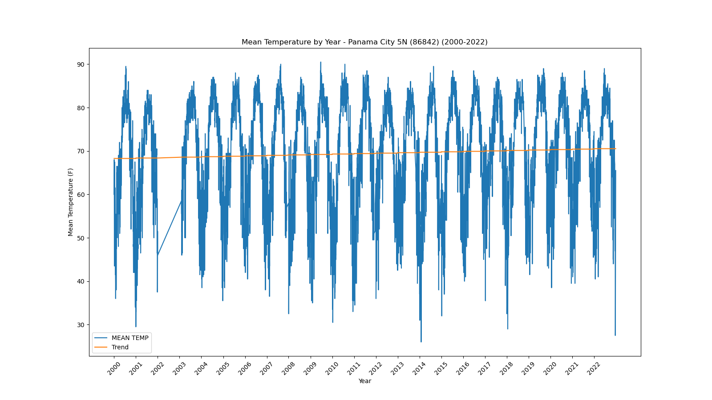</a></div>`)[0];
                popup_648ffa6b532ec4c1fd53071ca7f6e125.setContent(html_6d00087ed711b26f8b37aeb8999fc8c7);
            
        

        marker_32004581bd950c861c3b60ef493b2266.bindPopup(popup_648ffa6b532ec4c1fd53071ca7f6e125)
        ;

        
    
    
            var marker_1c019038f353750f9def7319cf1ca780 = L.marker(
                [27.59, -82.43],
                {}
            ).addTo(map_f2e31951a28b9ed93b38d7cb64ef93d6);
        
    
            var icon_cfaf0a68a7794f7e7c50864040a24a64 = L.AwesomeMarkers.icon(
                {"extraClasses": "fa-rotate-0", "icon": "info-sign", "iconColor": "white", "markerColor": "orange", "prefix": "glyphicon"}
            );
            marker_1c019038f353750f9def7319cf1ca780.setIcon(icon_cfaf0a68a7794f7e7c50864040a24a64);
        
    
        var popup_4616196fe58ec908b84ee512fd652965 = L.popup({"maxWidth": 1000, "minWidth": 500});

        
            
                var html_6481fc92935d1fb9b943b69fd44b9fe7 = $(`<div id="html_6481fc92935d1fb9b943b69fd44b9fe7" style="width: 100.0%; height: 100.0%;"><b>Parrish (86880)</b><br>lat: 27.59, lon: -82.43<br><a href='../../static/img/plots/timeseries/meantemp_daily/86880_2000-2022.png' target='_BLANK'></a></div>`)[0];
                popup_4616196fe58ec908b84ee512fd652965.setContent(html_6481fc92935d1fb9b943b69fd44b9fe7);
            
        

        marker_1c019038f353750f9def7319cf1ca780.bindPopup(popup_4616196fe58ec908b84ee512fd652965)
        ;

        
    
    
            var marker_bd6c9d971245550c0c70dac875560b43 = L.marker(
                [30.48, -87.19],
                {}
            ).addTo(map_f2e31951a28b9ed93b38d7cb64ef93d6);
        
    
            var icon_a0739bbfbe88628da637996b7587c08a = L.AwesomeMarkers.icon(
                {"extraClasses": "fa-rotate-0", "icon": "info-sign", "iconColor": "white", "markerColor": "orange", "prefix": "glyphicon"}
            );
            marker_bd6c9d971245550c0c70dac875560b43.setIcon(icon_a0739bbfbe88628da637996b7587c08a);
        
    
        var popup_5bd66a9d96f60e80aeef60503661c91b = L.popup({"maxWidth": 1000, "minWidth": 500});

        
            
                var html_886ad1860920538be26d1ec014a0a7ac = $(`<div id="html_886ad1860920538be26d1ec014a0a7ac" style="width: 100.0%; height: 100.0%;"><b>Pensacola Regional Airport (86997)</b><br>lat: 30.48, lon: -87.19<br><a href='../../static/img/plots/timeseries/meantemp_daily/86997_2000-2022.png' target='_BLANK'></a></div>`)[0];
                popup_5bd66a9d96f60e80aeef60503661c91b.setContent(html_886ad1860920538be26d1ec014a0a7ac);
            
        

        marker_bd6c9d971245550c0c70dac875560b43.bindPopup(popup_5bd66a9d96f60e80aeef60503661c91b)
        ;

        
    
    
            var marker_b37e0c915920c774f80c78d710ba7469 = L.marker(
                [25.59, -80.36],
                {}
            ).addTo(map_f2e31951a28b9ed93b38d7cb64ef93d6);
        
    
            var icon_9ae52048458f5416e5d3c743d0b5f4d4 = L.AwesomeMarkers.icon(
                {"extraClasses": "fa-rotate-0", "icon": "info-sign", "iconColor": "white", "markerColor": "orange", "prefix": "glyphicon"}
            );
            marker_b37e0c915920c774f80c78d710ba7469.setIcon(icon_9ae52048458f5416e5d3c743d0b5f4d4);
        
    
        var popup_f6ce66ef38500d014f98a6a52959175d = L.popup({"maxWidth": 1000, "minWidth": 500});

        
            
                var html_ed14787560102ac9e868b2a68d174389 = $(`<div id="html_ed14787560102ac9e868b2a68d174389" style="width: 100.0%; height: 100.0%;"><b>Perrine 4W (87020)</b><br>lat: 25.59, lon: -80.36<br><a href='../../static/img/plots/timeseries/meantemp_daily/87020_2000-2022.png' target='_BLANK'></a></div>`)[0];
                popup_f6ce66ef38500d014f98a6a52959175d.setContent(html_ed14787560102ac9e868b2a68d174389);
            
        

        marker_b37e0c915920c774f80c78d710ba7469.bindPopup(popup_f6ce66ef38500d014f98a6a52959175d)
        ;

        
    
    
            var marker_c58b348e4fd401d1e0f22cf78e6fca60 = L.marker(
                [30.11, -83.58],
                {}
            ).addTo(map_f2e31951a28b9ed93b38d7cb64ef93d6);
        
    
            var icon_55958273f024eb0f7e628ba7acd8c682 = L.AwesomeMarkers.icon(
                {"extraClasses": "fa-rotate-0", "icon": "info-sign", "iconColor": "white", "markerColor": "orange", "prefix": "glyphicon"}
            );
            marker_c58b348e4fd401d1e0f22cf78e6fca60.setIcon(icon_55958273f024eb0f7e628ba7acd8c682);
        
    
        var popup_94b391188647f2f995f3802544d2a801 = L.popup({"maxWidth": 1000, "minWidth": 500});

        
            
                var html_0393e2277dc3f68e1d85f0d4ca357abf = $(`<div id="html_0393e2277dc3f68e1d85f0d4ca357abf" style="width: 100.0%; height: 100.0%;"><b>Perry (87025)</b><br>lat: 30.11, lon: -83.58<br><a href='../../static/img/plots/timeseries/meantemp_daily/87025_2000-2022.png' target='_BLANK'></a></div>`)[0];
                popup_94b391188647f2f995f3802544d2a801.setContent(html_0393e2277dc3f68e1d85f0d4ca357abf);
            
        

        marker_c58b348e4fd401d1e0f22cf78e6fca60.bindPopup(popup_94b391188647f2f995f3802544d2a801)
        ;

        
    
    
            var marker_454cfc7b10ed5537e63ebe9cfe8fec5d = L.marker(
                [28.01, -82.16],
                {}
            ).addTo(map_f2e31951a28b9ed93b38d7cb64ef93d6);
        
    
            var icon_b0bdba3fb51ffd885f9a8e27a9ba8a09 = L.AwesomeMarkers.icon(
                {"extraClasses": "fa-rotate-0", "icon": "info-sign", "iconColor": "white", "markerColor": "orange", "prefix": "glyphicon"}
            );
            marker_454cfc7b10ed5537e63ebe9cfe8fec5d.setIcon(icon_b0bdba3fb51ffd885f9a8e27a9ba8a09);
        
    
        var popup_a454b8c3788e4023ac06d280e865b512 = L.popup({"maxWidth": 1000, "minWidth": 500});

        
            
                var html_71a149f8359661da07b33ed35513f860 = $(`<div id="html_71a149f8359661da07b33ed35513f860" style="width: 100.0%; height: 100.0%;"><b>Plant City (87205)</b><br>lat: 28.01, lon: -82.16<br><a href='../../static/img/plots/timeseries/meantemp_daily/87205_2000-2022.png' target='_BLANK'></a></div>`)[0];
                popup_a454b8c3788e4023ac06d280e865b512.setContent(html_71a149f8359661da07b33ed35513f860);
            
        

        marker_454cfc7b10ed5537e63ebe9cfe8fec5d.bindPopup(popup_a454b8c3788e4023ac06d280e865b512)
        ;

        
    
    
            var marker_7895dc37c18b5d3c7fed5725d96de7b0 = L.marker(
                [26.92, -82.0],
                {}
            ).addTo(map_f2e31951a28b9ed93b38d7cb64ef93d6);
        
    
            var icon_51b5dff0bb88591924070e473e03b333 = L.AwesomeMarkers.icon(
                {"extraClasses": "fa-rotate-0", "icon": "info-sign", "iconColor": "white", "markerColor": "orange", "prefix": "glyphicon"}
            );
            marker_7895dc37c18b5d3c7fed5725d96de7b0.setIcon(icon_51b5dff0bb88591924070e473e03b333);
        
    
        var popup_75664b81909e2f24d34f037675f62610 = L.popup({"maxWidth": 1000, "minWidth": 500});

        
            
                var html_c79fe5d8387da808a3f2b28856183916 = $(`<div id="html_c79fe5d8387da808a3f2b28856183916" style="width: 100.0%; height: 100.0%;"><b>Punta Gorda 4 ESE (87397)</b><br>lat: 26.92, lon: -82<br><a href='../../static/img/plots/timeseries/meantemp_daily/87397_2000-2022.png' target='_BLANK'></a></div>`)[0];
                popup_75664b81909e2f24d34f037675f62610.setContent(html_c79fe5d8387da808a3f2b28856183916);
            
        

        marker_7895dc37c18b5d3c7fed5725d96de7b0.bindPopup(popup_75664b81909e2f24d34f037675f62610)
        ;

        
    
    
            var marker_289aba27b1bc083615c4ed363e190606 = L.marker(
                [30.59, -84.59],
                {}
            ).addTo(map_f2e31951a28b9ed93b38d7cb64ef93d6);
        
    
            var icon_906722806d901d9b5f09f1bbd6833eb6 = L.AwesomeMarkers.icon(
                {"extraClasses": "fa-rotate-0", "icon": "info-sign", "iconColor": "white", "markerColor": "blue", "prefix": "glyphicon"}
            );
            marker_289aba27b1bc083615c4ed363e190606.setIcon(icon_906722806d901d9b5f09f1bbd6833eb6);
        
    
        var popup_89b0f21a2f4e960d397f898a9f7b18f4 = L.popup({"maxWidth": 1000, "minWidth": 500});

        
            
                var html_a9ca0076361b87aab7d0375c907101af = $(`<div id="html_a9ca0076361b87aab7d0375c907101af" style="width: 100.0%; height: 100.0%;"><b>Quincy 3 SSW (87429)</b><br>lat: 30.59, lon: -84.59<br><a href='../../static/img/plots/timeseries/meantemp_daily/87429_2000-2022.png' target='_BLANK'>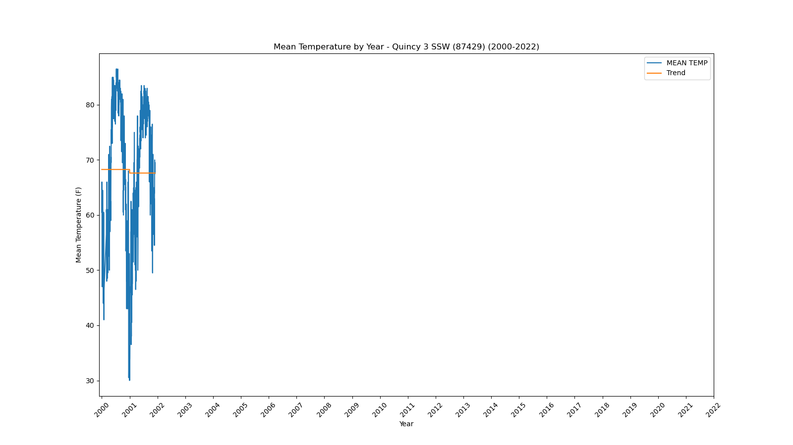</a></div>`)[0];
                popup_89b0f21a2f4e960d397f898a9f7b18f4.setContent(html_a9ca0076361b87aab7d0375c907101af);
            
        

        marker_289aba27b1bc083615c4ed363e190606.bindPopup(popup_89b0f21a2f4e960d397f898a9f7b18f4)
        ;

        
    
    
            var marker_739d2d9ed30df315b0b419cbead13504 = L.marker(
                [25.38, -80.61],
                {}
            ).addTo(map_f2e31951a28b9ed93b38d7cb64ef93d6);
        
    
            var icon_811ec34091bb41a4eb02e74064912e56 = L.AwesomeMarkers.icon(
                {"extraClasses": "fa-rotate-0", "icon": "info-sign", "iconColor": "white", "markerColor": "orange", "prefix": "glyphicon"}
            );
            marker_739d2d9ed30df315b0b419cbead13504.setIcon(icon_811ec34091bb41a4eb02e74064912e56);
        
    
        var popup_50c4b4c7703fdbba65f4868edefbaa92 = L.popup({"maxWidth": 1000, "minWidth": 500});

        
            
                var html_d6ac34c1f406094b88d16a9e2ed09d85 = $(`<div id="html_d6ac34c1f406094b88d16a9e2ed09d85" style="width: 100.0%; height: 100.0%;"><b>Royal Palm Ranger Station (87760)</b><br>lat: 25.38, lon: -80.61<br><a href='../../static/img/plots/timeseries/meantemp_daily/87760_2000-2022.png' target='_BLANK'></a></div>`)[0];
                popup_50c4b4c7703fdbba65f4868edefbaa92.setContent(html_d6ac34c1f406094b88d16a9e2ed09d85);
            
        

        marker_739d2d9ed30df315b0b419cbead13504.bindPopup(popup_50c4b4c7703fdbba65f4868edefbaa92)
        ;

        
    
    
            var marker_ba2fb324d34daa18d38d9f3e73e03c91 = L.marker(
                [29.89, -81.29],
                {}
            ).addTo(map_f2e31951a28b9ed93b38d7cb64ef93d6);
        
    
            var icon_8113e207bf670f458808ae7fda3764c0 = L.AwesomeMarkers.icon(
                {"extraClasses": "fa-rotate-0", "icon": "info-sign", "iconColor": "white", "markerColor": "orange", "prefix": "glyphicon"}
            );
            marker_ba2fb324d34daa18d38d9f3e73e03c91.setIcon(icon_8113e207bf670f458808ae7fda3764c0);
        
    
        var popup_4dc2e90576ec9e14d19237f3da8b7d6c = L.popup({"maxWidth": 1000, "minWidth": 500});

        
            
                var html_b6656872d78a2a5f662f871ddc2bfa97 = $(`<div id="html_b6656872d78a2a5f662f871ddc2bfa97" style="width: 100.0%; height: 100.0%;"><b>St. Augustine Lighthouse (87826)</b><br>lat: 29.89, lon: -81.29<br><a href='../../static/img/plots/timeseries/meantemp_daily/87826_2000-2022.png' target='_BLANK'>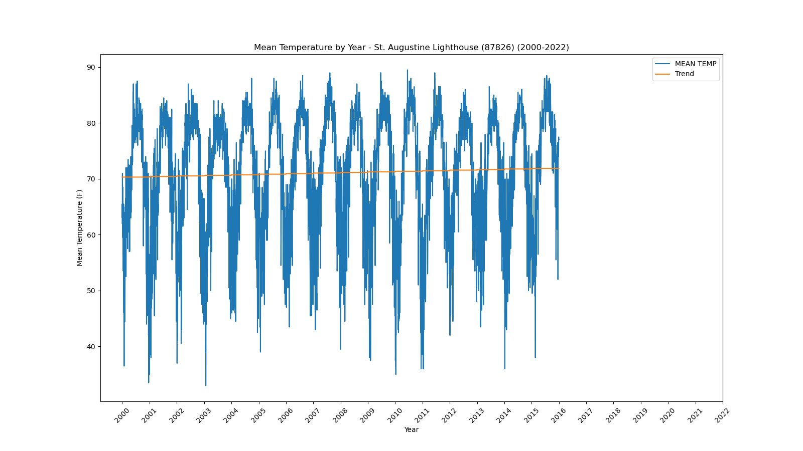</a></div>`)[0];
                popup_4dc2e90576ec9e14d19237f3da8b7d6c.setContent(html_b6656872d78a2a5f662f871ddc2bfa97);
            
        

        marker_ba2fb324d34daa18d38d9f3e73e03c91.bindPopup(popup_4dc2e90576ec9e14d19237f3da8b7d6c)
        ;

        
    
    
            var marker_f58c3cba4e93f1bc4784605a9d424f8a = L.marker(
                [28.34, -82.26],
                {}
            ).addTo(map_f2e31951a28b9ed93b38d7cb64ef93d6);
        
    
            var icon_67c356ac636f6ed861e708a69c1e0360 = L.AwesomeMarkers.icon(
                {"extraClasses": "fa-rotate-0", "icon": "info-sign", "iconColor": "white", "markerColor": "orange", "prefix": "glyphicon"}
            );
            marker_f58c3cba4e93f1bc4784605a9d424f8a.setIcon(icon_67c356ac636f6ed861e708a69c1e0360);
        
    
        var popup_d08375bc739a7dd14909b65e32ccda2d = L.popup({"maxWidth": 1000, "minWidth": 500});

        
            
                var html_7316f6429cb53a7c9d612900710b43d4 = $(`<div id="html_7316f6429cb53a7c9d612900710b43d4" style="width: 100.0%; height: 100.0%;"><b>Sain Leo (87851)</b><br>lat: 28.34, lon: -82.26<br><a href='../../static/img/plots/timeseries/meantemp_daily/87851_2000-2022.png' target='_BLANK'></a></div>`)[0];
                popup_d08375bc739a7dd14909b65e32ccda2d.setContent(html_7316f6429cb53a7c9d612900710b43d4);
            
        

        marker_f58c3cba4e93f1bc4784605a9d424f8a.bindPopup(popup_d08375bc739a7dd14909b65e32ccda2d)
        ;

        
    
    
            var marker_461da07c930929203439e72931542973 = L.marker(
                [27.91, -82.69],
                {}
            ).addTo(map_f2e31951a28b9ed93b38d7cb64ef93d6);
        
    
            var icon_e50804ed46f9d04c21055c882b8fd76d = L.AwesomeMarkers.icon(
                {"extraClasses": "fa-rotate-0", "icon": "info-sign", "iconColor": "white", "markerColor": "orange", "prefix": "glyphicon"}
            );
            marker_461da07c930929203439e72931542973.setIcon(icon_e50804ed46f9d04c21055c882b8fd76d);
        
    
        var popup_6f5a94633a769ded0a6164edd50ebe4c = L.popup({"maxWidth": 1000, "minWidth": 500});

        
            
                var html_17cb1290acd7d0c70272a6201075118e = $(`<div id="html_17cb1290acd7d0c70272a6201075118e" style="width: 100.0%; height: 100.0%;"><b>St. Petersburg Airport (87886)</b><br>lat: 27.91, lon: -82.69<br><a href='../../static/img/plots/timeseries/meantemp_daily/87886_2000-2022.png' target='_BLANK'></a></div>`)[0];
                popup_6f5a94633a769ded0a6164edd50ebe4c.setContent(html_17cb1290acd7d0c70272a6201075118e);
            
        

        marker_461da07c930929203439e72931542973.bindPopup(popup_6f5a94633a769ded0a6164edd50ebe4c)
        ;

        
    
    
            var marker_71428c7cdc64901c1211b6b086a80b71 = L.marker(
                [28.78, -81.24],
                {}
            ).addTo(map_f2e31951a28b9ed93b38d7cb64ef93d6);
        
    
            var icon_2002d7c821c687977c614ae7d4f53bb7 = L.AwesomeMarkers.icon(
                {"extraClasses": "fa-rotate-0", "icon": "info-sign", "iconColor": "white", "markerColor": "orange", "prefix": "glyphicon"}
            );
            marker_71428c7cdc64901c1211b6b086a80b71.setIcon(icon_2002d7c821c687977c614ae7d4f53bb7);
        
    
        var popup_68728978192a41e4e2df54277ea31994 = L.popup({"maxWidth": 1000, "minWidth": 500});

        
            
                var html_f47b218a45a9792a17592507ea4f3701 = $(`<div id="html_f47b218a45a9792a17592507ea4f3701" style="width: 100.0%; height: 100.0%;"><b>Sanford (87982)</b><br>lat: 28.78, lon: -81.24<br><a href='../../static/img/plots/timeseries/meantemp_daily/87982_2000-2022.png' target='_BLANK'></a></div>`)[0];
                popup_68728978192a41e4e2df54277ea31994.setContent(html_f47b218a45a9792a17592507ea4f3701);
            
        

        marker_71428c7cdc64901c1211b6b086a80b71.bindPopup(popup_68728978192a41e4e2df54277ea31994)
        ;

        
    
    
            var marker_ba1034a5acd02904e8fa4e412bd0738c = L.marker(
                [27.2, -80.25],
                {}
            ).addTo(map_f2e31951a28b9ed93b38d7cb64ef93d6);
        
    
            var icon_7227f6943142c407fc7f46697c6c80e4 = L.AwesomeMarkers.icon(
                {"extraClasses": "fa-rotate-0", "icon": "info-sign", "iconColor": "white", "markerColor": "orange", "prefix": "glyphicon"}
            );
            marker_ba1034a5acd02904e8fa4e412bd0738c.setIcon(icon_7227f6943142c407fc7f46697c6c80e4);
        
    
        var popup_bc4575e31f26bcdb3128cc6e05bae749 = L.popup({"maxWidth": 1000, "minWidth": 500});

        
            
                var html_45231ac257c31e55dd538747cdcc1146 = $(`<div id="html_45231ac257c31e55dd538747cdcc1146" style="width: 100.0%; height: 100.0%;"><b>Stuart (88620)</b><br>lat: 27.2, lon: -80.25<br><a href='../../static/img/plots/timeseries/meantemp_daily/88620_2000-2022.png' target='_BLANK'></a></div>`)[0];
                popup_bc4575e31f26bcdb3128cc6e05bae749.setContent(html_45231ac257c31e55dd538747cdcc1146);
            
        

        marker_ba1034a5acd02904e8fa4e412bd0738c.bindPopup(popup_bc4575e31f26bcdb3128cc6e05bae749)
        ;

        
    
    
            var marker_4c4defefc962509240c19b16fcfdcb21 = L.marker(
                [30.39, -84.35],
                {}
            ).addTo(map_f2e31951a28b9ed93b38d7cb64ef93d6);
        
    
            var icon_f45cf4dd6ae55082f7bf94763f07b292 = L.AwesomeMarkers.icon(
                {"extraClasses": "fa-rotate-0", "icon": "info-sign", "iconColor": "white", "markerColor": "orange", "prefix": "glyphicon"}
            );
            marker_4c4defefc962509240c19b16fcfdcb21.setIcon(icon_f45cf4dd6ae55082f7bf94763f07b292);
        
    
        var popup_fe6e1073e8cdcef877ca8b09672d687c = L.popup({"maxWidth": 1000, "minWidth": 500});

        
            
                var html_8b96e93060ad56e511bc027ea6de1cb3 = $(`<div id="html_8b96e93060ad56e511bc027ea6de1cb3" style="width: 100.0%; height: 100.0%;"><b>Tallahassee Regional Airport (88758)</b><br>lat: 30.39, lon: -84.35<br><a href='../../static/img/plots/timeseries/meantemp_daily/88758_2000-2022.png' target='_BLANK'></a></div>`)[0];
                popup_fe6e1073e8cdcef877ca8b09672d687c.setContent(html_8b96e93060ad56e511bc027ea6de1cb3);
            
        

        marker_4c4defefc962509240c19b16fcfdcb21.bindPopup(popup_fe6e1073e8cdcef877ca8b09672d687c)
        ;

        
    
    
            var marker_76de2fe83852ad964dad858429140e49 = L.marker(
                [27.98, -82.53],
                {}
            ).addTo(map_f2e31951a28b9ed93b38d7cb64ef93d6);
        
    
            var icon_ad7c144b926980bdac4cb34d5f6af3b6 = L.AwesomeMarkers.icon(
                {"extraClasses": "fa-rotate-0", "icon": "info-sign", "iconColor": "white", "markerColor": "orange", "prefix": "glyphicon"}
            );
            marker_76de2fe83852ad964dad858429140e49.setIcon(icon_ad7c144b926980bdac4cb34d5f6af3b6);
        
    
        var popup_9b220556deaff452d6b11ae659e02ed9 = L.popup({"maxWidth": 1000, "minWidth": 500});

        
            
                var html_be1ee8bc153da7bd643aa90dc0b93a8f = $(`<div id="html_be1ee8bc153da7bd643aa90dc0b93a8f" style="width: 100.0%; height: 100.0%;"><b>Tampa Intl Airport (88788)</b><br>lat: 27.98, lon: -82.53<br><a href='../../static/img/plots/timeseries/meantemp_daily/88788_2000-2022.png' target='_BLANK'></a></div>`)[0];
                popup_9b220556deaff452d6b11ae659e02ed9.setContent(html_be1ee8bc153da7bd643aa90dc0b93a8f);
            
        

        marker_76de2fe83852ad964dad858429140e49.bindPopup(popup_9b220556deaff452d6b11ae659e02ed9)
        ;

        
    
    
            var marker_8d50b8aaac03ecc3a94adf265c0cd0ce = L.marker(
                [28.15, -82.75],
                {}
            ).addTo(map_f2e31951a28b9ed93b38d7cb64ef93d6);
        
    
            var icon_f2d66400001498c00d3719bd1cbc10e7 = L.AwesomeMarkers.icon(
                {"extraClasses": "fa-rotate-0", "icon": "info-sign", "iconColor": "white", "markerColor": "orange", "prefix": "glyphicon"}
            );
            marker_8d50b8aaac03ecc3a94adf265c0cd0ce.setIcon(icon_f2d66400001498c00d3719bd1cbc10e7);
        
    
        var popup_91bb41938dfda7e3c786d91880b22535 = L.popup({"maxWidth": 1000, "minWidth": 500});

        
            
                var html_6b3ff57f15b6de25486ee48262a65f32 = $(`<div id="html_6b3ff57f15b6de25486ee48262a65f32" style="width: 100.0%; height: 100.0%;"><b>Tarpon Springs Sewage Plant (88824)</b><br>lat: 28.15, lon: -82.75<br><a href='../../static/img/plots/timeseries/meantemp_daily/88824_2000-2022.png' target='_BLANK'></a></div>`)[0];
                popup_91bb41938dfda7e3c786d91880b22535.setContent(html_6b3ff57f15b6de25486ee48262a65f32);
            
        

        marker_8d50b8aaac03ecc3a94adf265c0cd0ce.bindPopup(popup_91bb41938dfda7e3c786d91880b22535)
        ;

        
    
    
            var marker_311e0555d476341b1173ac4557c6883f = L.marker(
                [28.61, -80.82],
                {}
            ).addTo(map_f2e31951a28b9ed93b38d7cb64ef93d6);
        
    
            var icon_604adbf574ac084e940373b235e982b3 = L.AwesomeMarkers.icon(
                {"extraClasses": "fa-rotate-0", "icon": "info-sign", "iconColor": "white", "markerColor": "orange", "prefix": "glyphicon"}
            );
            marker_311e0555d476341b1173ac4557c6883f.setIcon(icon_604adbf574ac084e940373b235e982b3);
        
    
        var popup_38e683b9efc424db6031ff4920a6f57c = L.popup({"maxWidth": 1000, "minWidth": 500});

        
            
                var html_786b10b599c2ab96e680226fbbed1bd1 = $(`<div id="html_786b10b599c2ab96e680226fbbed1bd1" style="width: 100.0%; height: 100.0%;"><b>Titusville (88942)</b><br>lat: 28.61, lon: -80.82<br><a href='../../static/img/plots/timeseries/meantemp_daily/88942_2000-2022.png' target='_BLANK'></a></div>`)[0];
                popup_38e683b9efc424db6031ff4920a6f57c.setContent(html_786b10b599c2ab96e680226fbbed1bd1);
            
        

        marker_311e0555d476341b1173ac4557c6883f.bindPopup(popup_38e683b9efc424db6031ff4920a6f57c)
        ;

        
    
    
            var marker_f0cce7f5fd8958c6a166c904747aa033 = L.marker(
                [29.41, -82.82],
                {}
            ).addTo(map_f2e31951a28b9ed93b38d7cb64ef93d6);
        
    
            var icon_28ea70b5c4b3e2e02ecfdac01faec877 = L.AwesomeMarkers.icon(
                {"extraClasses": "fa-rotate-0", "icon": "info-sign", "iconColor": "white", "markerColor": "orange", "prefix": "glyphicon"}
            );
            marker_f0cce7f5fd8958c6a166c904747aa033.setIcon(icon_28ea70b5c4b3e2e02ecfdac01faec877);
        
    
        var popup_e4f18bedf61ae6ae97016253dc98dce4 = L.popup({"maxWidth": 1000, "minWidth": 500});

        
            
                var html_2bfb3a4dd18bb4692f04ac9c92bcf337 = $(`<div id="html_2bfb3a4dd18bb4692f04ac9c92bcf337" style="width: 100.0%; height: 100.0%;"><b>Usher Lookout Tower (89120)</b><br>lat: 29.41, lon: -82.82<br><a href='../../static/img/plots/timeseries/meantemp_daily/89120_2000-2022.png' target='_BLANK'></a></div>`)[0];
                popup_e4f18bedf61ae6ae97016253dc98dce4.setContent(html_2bfb3a4dd18bb4692f04ac9c92bcf337);
            
        

        marker_f0cce7f5fd8958c6a166c904747aa033.bindPopup(popup_e4f18bedf61ae6ae97016253dc98dce4)
        ;

        
    
    
            var marker_d0ac570bc2c385c16cac4b0822d0ec97 = L.marker(
                [27.1, -82.43],
                {}
            ).addTo(map_f2e31951a28b9ed93b38d7cb64ef93d6);
        
    
            var icon_b2caf3b0d0dad736d4f7c489a8fb8c65 = L.AwesomeMarkers.icon(
                {"extraClasses": "fa-rotate-0", "icon": "info-sign", "iconColor": "white", "markerColor": "orange", "prefix": "glyphicon"}
            );
            marker_d0ac570bc2c385c16cac4b0822d0ec97.setIcon(icon_b2caf3b0d0dad736d4f7c489a8fb8c65);
        
    
        var popup_4e54be0da1179cdb7aa6b714b9e482d9 = L.popup({"maxWidth": 1000, "minWidth": 500});

        
            
                var html_7268d03f72aee036857725f32296750c = $(`<div id="html_7268d03f72aee036857725f32296750c" style="width: 100.0%; height: 100.0%;"><b>Venice (89176)</b><br>lat: 27.1, lon: -82.43<br><a href='../../static/img/plots/timeseries/meantemp_daily/89176_2000-2022.png' target='_BLANK'>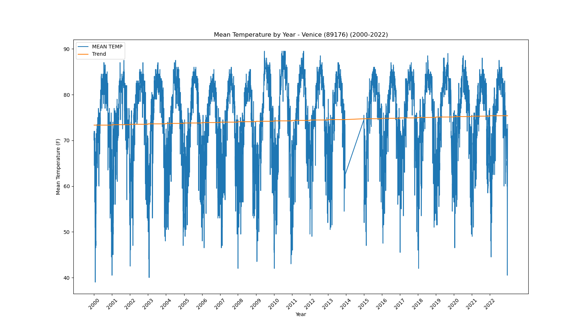</a></div>`)[0];
                popup_4e54be0da1179cdb7aa6b714b9e482d9.setContent(html_7268d03f72aee036857725f32296750c);
            
        

        marker_d0ac570bc2c385c16cac4b0822d0ec97.bindPopup(popup_4e54be0da1179cdb7aa6b714b9e482d9)
        ;

        
    
    
            var marker_1c4bcec7b5054edf0989a45ee4f329ec = L.marker(
                [27.65, -80.42],
                {}
            ).addTo(map_f2e31951a28b9ed93b38d7cb64ef93d6);
        
    
            var icon_6df973aa6082aa8307a2e5a577f3c431 = L.AwesomeMarkers.icon(
                {"extraClasses": "fa-rotate-0", "icon": "info-sign", "iconColor": "white", "markerColor": "orange", "prefix": "glyphicon"}
            );
            marker_1c4bcec7b5054edf0989a45ee4f329ec.setIcon(icon_6df973aa6082aa8307a2e5a577f3c431);
        
    
        var popup_2916cf179cbeec99e458b8b056006dad = L.popup({"maxWidth": 1000, "minWidth": 500});

        
            
                var html_cfa02547d9858946deec4753b9fe7baa = $(`<div id="html_cfa02547d9858946deec4753b9fe7baa" style="width: 100.0%; height: 100.0%;"><b>Vero Beach Intl Airport (89214)</b><br>lat: 27.65, lon: -80.42<br><a href='../../static/img/plots/timeseries/meantemp_daily/89214_2000-2022.png' target='_BLANK'></a></div>`)[0];
                popup_2916cf179cbeec99e458b8b056006dad.setContent(html_cfa02547d9858946deec4753b9fe7baa);
            
        

        marker_1c4bcec7b5054edf0989a45ee4f329ec.bindPopup(popup_2916cf179cbeec99e458b8b056006dad)
        ;

        
    
    
            var marker_5189f06a859eb9170c8bf8fa32fdde64 = L.marker(
                [27.66, -80.37],
                {}
            ).addTo(map_f2e31951a28b9ed93b38d7cb64ef93d6);
        
    
            var icon_32ae16f86addbab74902a1f67b2c150b = L.AwesomeMarkers.icon(
                {"extraClasses": "fa-rotate-0", "icon": "info-sign", "iconColor": "white", "markerColor": "orange", "prefix": "glyphicon"}
            );
            marker_5189f06a859eb9170c8bf8fa32fdde64.setIcon(icon_32ae16f86addbab74902a1f67b2c150b);
        
    
        var popup_64a669d1ceaeac0285a17fe498f6ddcd = L.popup({"maxWidth": 1000, "minWidth": 500});

        
            
                var html_9d9ab7c6d62cdd2876e62d71e0f9ffb0 = $(`<div id="html_9d9ab7c6d62cdd2876e62d71e0f9ffb0" style="width: 100.0%; height: 100.0%;"><b>Vero Beach 4 SE (89219)</b><br>lat: 27.66, lon: -80.37<br><a href='../../static/img/plots/timeseries/meantemp_daily/89219_2000-2022.png' target='_BLANK'></a></div>`)[0];
                popup_64a669d1ceaeac0285a17fe498f6ddcd.setContent(html_9d9ab7c6d62cdd2876e62d71e0f9ffb0);
            
        

        marker_5189f06a859eb9170c8bf8fa32fdde64.bindPopup(popup_64a669d1ceaeac0285a17fe498f6ddcd)
        ;

        
    
    
            var marker_46e488770c1349465f1537784b8b67b5 = L.marker(
                [27.51, -81.89],
                {}
            ).addTo(map_f2e31951a28b9ed93b38d7cb64ef93d6);
        
    
            var icon_c1a50afb8cf5f6a3b143571e0dbcbef4 = L.AwesomeMarkers.icon(
                {"extraClasses": "fa-rotate-0", "icon": "info-sign", "iconColor": "white", "markerColor": "orange", "prefix": "glyphicon"}
            );
            marker_46e488770c1349465f1537784b8b67b5.setIcon(icon_c1a50afb8cf5f6a3b143571e0dbcbef4);
        
    
        var popup_f37891748e25aadccf3d04ce366d0954 = L.popup({"maxWidth": 1000, "minWidth": 500});

        
            
                var html_a9baf57e375ce74327788a8f5dd69486 = $(`<div id="html_a9baf57e375ce74327788a8f5dd69486" style="width: 100.0%; height: 100.0%;"><b>Wauchula (89401)</b><br>lat: 27.51, lon: -81.89<br><a href='../../static/img/plots/timeseries/meantemp_daily/89401_2000-2022.png' target='_BLANK'></a></div>`)[0];
                popup_f37891748e25aadccf3d04ce366d0954.setContent(html_a9baf57e375ce74327788a8f5dd69486);
            
        

        marker_46e488770c1349465f1537784b8b67b5.bindPopup(popup_f37891748e25aadccf3d04ce366d0954)
        ;

        
    
    
            var marker_68695b085f1c6d849fae121cd3ce551b = L.marker(
                [28.53, -82.58],
                {}
            ).addTo(map_f2e31951a28b9ed93b38d7cb64ef93d6);
        
    
            var icon_7c1622fe8e5f6dbe5f0490bcac2e25c0 = L.AwesomeMarkers.icon(
                {"extraClasses": "fa-rotate-0", "icon": "info-sign", "iconColor": "white", "markerColor": "orange", "prefix": "glyphicon"}
            );
            marker_68695b085f1c6d849fae121cd3ce551b.setIcon(icon_7c1622fe8e5f6dbe5f0490bcac2e25c0);
        
    
        var popup_dd766d54eccf1591ce3f58330639d135 = L.popup({"maxWidth": 1000, "minWidth": 500});

        
            
                var html_7c8d6d29050d22509e05ec88bd851990 = $(`<div id="html_7c8d6d29050d22509e05ec88bd851990" style="width: 100.0%; height: 100.0%;"><b>Weeki Wachee (89430)</b><br>lat: 28.53, lon: -82.58<br><a href='../../static/img/plots/timeseries/meantemp_daily/89430_2000-2022.png' target='_BLANK'></a></div>`)[0];
                popup_dd766d54eccf1591ce3f58330639d135.setContent(html_7c8d6d29050d22509e05ec88bd851990);
            
        

        marker_68695b085f1c6d849fae121cd3ce551b.bindPopup(popup_dd766d54eccf1591ce3f58330639d135)
        ;

        
    
    
            var marker_045d860c0cf94156bc07a9370b8bffd5 = L.marker(
                [26.69, -80.09],
                {}
            ).addTo(map_f2e31951a28b9ed93b38d7cb64ef93d6);
        
    
            var icon_0a258e7a904ab484ac8154d3611eeae6 = L.AwesomeMarkers.icon(
                {"extraClasses": "fa-rotate-0", "icon": "info-sign", "iconColor": "white", "markerColor": "orange", "prefix": "glyphicon"}
            );
            marker_045d860c0cf94156bc07a9370b8bffd5.setIcon(icon_0a258e7a904ab484ac8154d3611eeae6);
        
    
        var popup_ffdf92ba29a3c1b84cf9f5c942049ae7 = L.popup({"maxWidth": 1000, "minWidth": 500});

        
            
                var html_62090d009e4171615101b84dd316d6bf = $(`<div id="html_62090d009e4171615101b84dd316d6bf" style="width: 100.0%; height: 100.0%;"><b>West Palm Beach Intl Airport (89525)</b><br>lat: 26.69, lon: -80.09<br><a href='../../static/img/plots/timeseries/meantemp_daily/89525_2000-2022.png' target='_BLANK'></a></div>`)[0];
                popup_ffdf92ba29a3c1b84cf9f5c942049ae7.setContent(html_62090d009e4171615101b84dd316d6bf);
            
        

        marker_045d860c0cf94156bc07a9370b8bffd5.bindPopup(popup_ffdf92ba29a3c1b84cf9f5c942049ae7)
        ;

        
    
    
            var marker_0ca9b2c89cdc4fc5b85c5a0c17e7ba88 = L.marker(
                [30.11, -85.2],
                {}
            ).addTo(map_f2e31951a28b9ed93b38d7cb64ef93d6);
        
    
            var icon_022b31c09fba2f22cc4e815002cb9716 = L.AwesomeMarkers.icon(
                {"extraClasses": "fa-rotate-0", "icon": "info-sign", "iconColor": "white", "markerColor": "orange", "prefix": "glyphicon"}
            );
            marker_0ca9b2c89cdc4fc5b85c5a0c17e7ba88.setIcon(icon_022b31c09fba2f22cc4e815002cb9716);
        
    
        var popup_8a071f480b1e7d31545fe4733a7fffb0 = L.popup({"maxWidth": 1000, "minWidth": 500});

        
            
                var html_8f584d26ae9ff12cc1e8e3771e53b625 = $(`<div id="html_8f584d26ae9ff12cc1e8e3771e53b625" style="width: 100.0%; height: 100.0%;"><b>Wewahitchka (89566)</b><br>lat: 30.11, lon: -85.2<br><a href='../../static/img/plots/timeseries/meantemp_daily/89566_2000-2022.png' target='_BLANK'></a></div>`)[0];
                popup_8a071f480b1e7d31545fe4733a7fffb0.setContent(html_8f584d26ae9ff12cc1e8e3771e53b625);
            
        

        marker_0ca9b2c89cdc4fc5b85c5a0c17e7ba88.bindPopup(popup_8a071f480b1e7d31545fe4733a7fffb0)
        ;

        
    
</script>
</html>